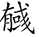
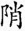

武帝时文人，赋莫若司马相如[202]，文莫若司马迁[203]，而一则寥寂，一则被刑。盖雄于文者，常桀骜不欲迎雄主之意，故遇合常不及凡文人。
司马相如字长卿，蜀郡成都人。少时好读书，学击剑，故其亲名之曰犬子；既学，慕蔺相如[204]之为人，更名相如。以訾为郎，[205]事景帝。帝不好辞赋，时梁孝王来朝，游说之士邹阳枚乘严忌等皆从，相如见而悦之，因病免，游梁，与诸侯游士居，数岁，作《子虚赋》。武帝立，读而善之，曰：“朕独不得与此人同时哉？”蜀人杨得意为狗监侍帝[206]，因言是其邑人司马相如作，乃召问相如。相如曰：有是。然此乃诸侯之事，未足观，请为天子游猎之赋。帝令尚书给笔札。相如以“子虚”，虚言也，为楚称；“乌有先生”者，乌有此事也，为齐难；“亡是公”者，亡是人也，欲明天子之义。故虚借此三人为辞，以推天子诸侯之苑囿。其卒章归之于节俭，因以讽谏。其文具存《史记》及《汉书》本传中：《文选》则以后半为《上林赋》，或召问后之所续欤？
相如既奏赋，武帝大悦，以为郎；数岁，作《喻巴蜀檄》[207]，旋拜中郎将，赴蜀，通西南夷，以蜀父老多言此事无益，大臣亦以为然，乃作《难蜀父老》文。其后，人有上书言相如使时受金，遂失官，岁余，复召为郎。然常闲居，不慕官爵，亦往往托辞讽谏，于游猎信谗之事，皆有微辞[208]。拜孝文园令。武帝既以《子虚赋》为善，相如察其好神仙，乃曰：“上林之事，未足美也，尚有靡者。臣尝为《大人赋》[209]，未就；请具而奏之。”意以为列仙之儒，居山泽间，形容甚臞，非帝王之仙意。惟彼大人，居于中州，悲世迫隘，于是轻举，乘虚无，超无友，亦忘天地，而乃独存也。中有云：
“……屯余车而万乘兮，粹云盖而树华旗。使句芒其将行兮，吾欲往乎南娭。……纷湛湛其差错兮，杂遝胶以方驰。骚扰冲苁其纷挐兮，滂濞泱轧丽以林离。攒罗列聚丛以茏茸兮，曼衍流烂痑以陆离。径入雷室之砰磷郁律兮，洞出鬼谷之掘礨崴魁。……时若暧暧将混浊兮，召屏翳，诛风伯，刑雨师。西望昆仑之轧沕荒忽兮，直径驰乎三危。排阊阖而入帝宫兮，载玉女而与之俱归。登阆风而遥集兮，亢鸟腾而壹止。彽徊阴山翔以纡曲兮，吾乃今日睹西王母，暠然白首戴胜而穴处兮，亦幸有三足乌为之使。必长生若此而不死兮，虽济万世不足以喜。……”
既奏，武帝大悦，飘飘有凌云之气，似游天地之间意。盖汉兴好楚声，武帝左右亲信，如朱买臣等，多以楚辞进，而相如独变其体，益以玮奇之意，饰以绮丽之辞，句之短长，亦不拘成法，与当时甚不同。故扬雄以为使孔门用赋，则贾谊升堂，相如入室[210]。班固以为西蜀自相如游宦京师，而文章冠天下[211]。盖后之扬雄，王褒，李尤，[212]固皆蜀人也。然相如亦作短赋，则繁丽之词较少，如《哀二世赋》，《长门赋》[213]。独《美人赋》颇靡丽，殆即扬雄所谓“劝百而讽一，犹骋郑卫之音，曲终而奏雅”者乎？[214]
“……途出郑卫，道由桑中，朝发溱洧，暮宿上宫。上宫闲馆，寂寥空虚，门昼掩，暧若神居。臣排其户而造其堂，芳香芬烈，黼帐高张；有女独处，婉然在床，奇葩逸丽，淑质艳光，睹臣迁延，微笑而言曰：‘上客何国之公子，所从来无乃远乎？’遂设旨酒，进鸣琴。臣遂抚弦为《幽兰》《白雪》之曲。女乃歌曰：‘独处室兮廓无依，思佳人兮情伤悲。有美人兮来何迟？日既暮兮华色衰，敢托身兮长自私。’玉钗挂臣冠，罗袖拂臣衣。时日西夕，玄阴晦冥，流风惨冽，素雪飘零，闲房寂谧，不闻人声。……臣乃脉定于内，心正于怀，信誓旦旦，秉志不回，翻然高举，与彼长辞。”
相如既病免，居茂陵，武帝闻其病甚，使所忠往取书[215]，至则已死（前一一七）。仅得一卷书，言封禅事。盖相如尝从胡安[216]受经。故少以文词游宦，而晚年终奏封禅之礼矣。于小学，则有《凡将篇》[217]，今不存。然其专长，终在辞赋，制作虽甚迟缓[218]，而不师故辙，自摅妙才，广博闳丽，卓绝汉代，明王世贞评《子虚》《上林》，以为材极富，辞极丽，运笔极古雅，精神极流动，长沙有其意而无其材，班张潘有其材而无其笔，子云有其笔而不得其精神流动之处云云，[219]其为历代评隲家所倾倒，可谓至矣。
司马迁字子长，河内人，生于龙门，年十岁诵古文，二十而南游吴会，北涉汶泗，游邹鲁，过梁楚以归，仕为郎中。父谈[220]，为太史令，元封初卒。迁继其业，天汉中李陵降匈奴，迁明陵无罪，遂下吏，指为诬上，家贫不能自赎，交游莫救，卒坐宫刑。被刑后为中书令，因益发愤，据《左氏》，《国语》；采《世本》，《战国策》；述《楚汉春秋》，[221]终成《史记》一百三十篇[222]，始于黄帝，中述陶唐，而至武帝获白麟止，盖自谓其书所以继《春秋》也。其友益州刺史任安[223]，尝责以古贤臣之义，迁报书有云：
“……所以隐忍苟活，函粪土之中而不辞者，恨私心有所不尽，鄙没世而文采不表于后也。古者富贵而名摩灭不可胜记，惟倜傥非常之人称焉。盖西伯拘而演《周易》；仲尼厄而作《春秋》；屈原放逐，乃赋《离骚》；左丘失明，厥有《国语》；孙子髌脚，《兵法》修列。……《诗》三百篇，大抵贤圣发愤之所为作也。此人皆意有所郁结，不得通其道，故述往事，思来者。及如左丘明无目，孙子断足，终不可用，退论书策，以舒其愤，思垂空文以自见。仆窃不逊，近自托于无能之辞，网罗天下放失旧闻，考之行事，稽其成败兴衰之理，凡百三十篇。亦欲以究天人之际，通古今之变，成一家之言。草创未就，适会此祸，惜其不成，是以就极刑而无愠色。仆诚已著此书，藏之名山，传之其人，通邑大都，则仆偿前辱之责，虽万被戮，岂有悔哉？然此可为智者道，难为俗人言也！……”
迁死后，书乃渐出；宣帝时，其外孙杨恽[224]祖述其书，遂宣布焉。班彪[225]颇不满，以为“采经摭传，分散数家之事，甚多疏略，或有抵梧。亦其涉略者广博，贯穿经传，驰骋古今上下数千载间，斯以勤矣。又其是非颇缪于圣人：论大道则先黄老而后六经，序游侠则退处士而进奸雄，述货殖则崇埶利而羞贫贱，此其所蔽也。”汉兴，陆贾作《楚汉春秋》，是非虽多本于儒者，而太史职守，原出道家，[226]其父谈亦崇尚黄老，则《史记》虽缪于儒术，固亦能远绍其旧业者矣。况发愤著书，意旨自激，其与任安书有云：“仆之先人，非有剖符丹书之功，文史星历，近乎卜祝之间，固主上所戏弄，倡优畜之，流俗之所轻也。假令仆伏法受诛，若九牛亡一毛，与蝼蚁何异。”恨为弄臣，寄心楮墨，感身世之戮辱，传畸人于千秋，虽背《春秋》之义，固不失为史家之绝唱，无韵之《离骚》矣。惟不拘于史法，不囿于字句，发于情，肆于心而为文，故能如茅坤[227]所言：“读游侠传即欲轻生，读屈原，贾谊传即欲流涕，读庄周，鲁仲连传即欲遗世，读李广传即欲立斗，读石建传即欲俯躬，读信陵，平原君传即欲养士”也。
然《汉书》已言《史记》有缺[228]，于是续者纷起，如褚先生，冯商，刘歆[229]等。《汉书》亦有出自刘歆者，故崔适以为《史记》之文有与全书乖，与《汉书》合者，亦歆所续也；至若年代悬隔，章句割裂，则当是后世妄人所增与钞胥所脱云。[230]
迁雄于文，而亦爱赋，颇喜纳之列传中。于《贾谊传》录其《吊屈原赋》及《服赋》，而《汉书》则全载《治安策》，赋无一[231]也。《司马相如传》上下篇，收赋尤多，为《子虚》（合《上林》），《哀二世》，《大人》等。自亦造赋[232]，《汉志》云八篇，今仅传《士不遇赋》一篇，明胡应麟以为伪作[233]。
至宣帝时，仍修武帝故事，讲论六艺群书，博尽奇异之好；征能为楚辞者，于是刘向[234]，张子侨，华龙，柳褒[235]等皆被召，待诏金马门。又得蜀人王褒字子渊，诏之作《圣主得贤臣颂》，与张子侨等并待诏。褒能为赋颂，亦作俳文，后方士言益州有金马碧鸡之宝，宣帝诏褒往祀，于道病死。
参考书：
《史记》（卷一百十七，一百三十）
《汉书》（卷五十七，六十二，六十四）
《史记探源》（崔适）
《中国大文学史》（第三编第四及第五章）
《支那文学史纲》（第三篇第六章）
《支那文学之研究》（日本铃木虎雄）第一卷
[1] 吕不韦（？—前235） 战国末期卫国濮阳（今属河南）人，原为大商人。秦庄襄王、秦王政时为相国，后被免职，忧惧自杀。他曾命门客编撰《吕氏春秋》，二十六卷。葛天氏，传说中氏族首领之一。八阙，据《吕氏春秋·仲夏纪·古乐》载，即《载民》、《玄鸟》、《遂草木》、《奋五谷》、《敬天常》、《建帝功》、《依地德》、《总禽兽之极》。
[2] 郑玄（127—200） 字康成，东汉北海高密（今属山东）人。长期聚徒讲学，后曾官大司农。所撰《诗谱》，分别说明《诗经》风、雅、颂各部分的地域、时代等情况；《诗谱序》总述《诗经》的形成与时代的关系。上皇，指伏羲氏（亦称庖牺氏），相传他教民结网，从事渔猎畜牧。
[3] 据唐司马贞《补史记》（《三皇本纪》）：“炎帝神农氏，……斲木为耜，揉木为耒，耒耨之用，以教万人，始教耕，故号神农氏。于是作蜡祭，以赭鞭鞭草木，始尝百草，始有医药。又作五弦之瑟。教人日中为市，交易而退，各得其所。遂重八卦为六十四爻。”
[4] 《易》 又称《周易》，我国古代占卜书。分经与传。经有卦、卦辞、爻辞三部分；传有十篇，是对经的解释。
[5] 许慎（约58—约147） 字叔重，东汉汝南召陵（今河南偃城）人。曾任太尉南阁祭酒。所撰《说文解字》三十卷，系文字学的重要著作。下文“书者，如也”，唐孔颖达《尚书序正义》：“《璇玑钤》云：‘书者，如也。’则书者，写其言，如其意，情得展舒也。”八岁入小学，《大戴礼记·保傅篇》载：“古者年八岁而出就外舍，学小艺焉，履小节焉。”保氏教国子，《周礼·地官》载：“保氏掌谏王恶，养国子以道，乃教之六艺。”六艺，指礼、乐、射、御、书、数。书，即六书。
[6] 岣嵝禹书 湖南衡山岣嵝峰上，有碑文七十余字，字体奇古，相传为夏禹所刻，实系后人伪托。
[7] 三皇 诸说不一。《帝王世纪》云：“天地开辟，有天皇氏、地皇氏、人皇氏。”西汉孔安国《尚书序》：“伏羲、神农、黄帝之书谓之三坟”；唐孔颖达《正义》：“三皇之书为三坟。”
[8] 有巢、燧人 皆传说中氏族首领。相传有巢教人巢居，因号有巢氏；燧人教人钻木取火，开始熟食，因号燧人氏。
[9] 黄帝 传说中的上古帝王。《史记·五帝本纪》：“黄帝者，少典之子，姓公孙，名曰轩辕。”《道言》，散见《吕氏春秋》、《淮南子》等书。如《吕氏春秋·去私》记黄帝之言曰：“声禁重，色禁重，衣禁重，香禁重，味禁重，室禁重。”
[10] 《金人铭》 西汉刘向《说苑·敬慎》记孔丘在周太庙见一金人（铜人），背上刻有铭文，有句云：“荧荧不灭，炎炎奈何。涓涓不壅，将成江河。绵绵不绝，将成网罗。青青不伐，将寻斧柯。”
[11] 颛顼 据《帝王世纪》载，颛顼即“高阳氏，黄帝之孙”。《大戴礼记·武王践祚》载颛顼《丹书》语云：“敬胜怠者吉，怠胜敬者灭；义胜欲者从，欲胜义者凶。”
[12] 帝喾 据《帝王世纪》载，帝喾即“高辛氏，少皡之孙”，少皡为黄帝之子。《贾子新书·修政语（上）》记帝喾语云：“德莫高于博爱人，而政莫高于博利人，故政莫大于信，治莫大于仁，吾慎此而已也。”
[14] 刘勰（约465—约532） 字彦和，南朝梁南东莞（今江苏镇江）人。所撰《文心雕龙》，十卷，五十篇，是中国第一部系统性的文学理论批评专著。下文自“三才所显”至“俱为文章”，均据《文心雕龙·原道》：“高卑定位，故两仪既生矣。唯人参之，性灵所钟，是谓三才；为五行之秀，实天地之心。心生而言立，言立而文明，自然之道也。傍及万品，动植皆文：龙凤以藻绘呈瑞，虎豹以炳蔚凝姿；云霞雕色，有逾画工之妙；草木贲华，无待锦匠之奇；夫岂外饰，盖自然耳。至于林籁结响，调如竽瑟；泉石激韵，和若球锽；故形立则章成矣，声发则文生矣。”
[15] “物相杂，故曰文” 语见《易·系辞（下）》。物，指阴阳。此二句意谓阴（）和阳（—）相错综即是文。
[16] 刘熙 字成国，东汉末北海（今山东潍坊）人。建安时曾在交州司职（一说任太守）。所撰《释名》，八卷，以音同或音近的字解释字义，推究事物所以命名的由来。

，彰也” 许慎《说文解字》原作“，有文章也”。清段玉裁注：“，也，有部曰，有彰也。”，段注：“以毛饰画而成彰。”[18] 萧绎（508—554） 即梁元帝，自号金楼子。初封湘东王，后即位称帝。所撰《金楼子》，笔记体著作，原为十卷，今存六卷。引文中的阎纂，即阎缵，字续伯，晋巴西安汉人。曾为太傅杨骏舍人。《晋书》有传。伯松，姓张名竦，西汉末年武阳人。因善作奏章，封淑德侯，官丹阳太守。《汉书·王莽传》载时人云：“欲求封，过张伯松；力战斗，不如巧为奏。”引文中的“今之门徒”、“精灵荡摇”，《知不足斋丛书》本作“夫子门徒”、“情灵摇荡”。
[19] 阮元（1764—1849） 字伯元，号芸台，清仪征（今属江苏）人，历任两广总督、体仁阁大学士等。著有《揅经室集》，其中《文言说》、《文韵说》、《与友人论古文书》等篇，论析文笔之分。其子阮福撰《文笔对》，谓“有情辞声韵者为文”，“直言无文采者为笔”。此文收入他所编《文笔考》一书，又见阮元《揅经室三集·学海堂文笔策问》。
[20] 《周礼》 又名《周官》，记述周王室官制和战国时各国制度，战国后期写成。内分《天官冢宰》、《地官司徒》、《春官宗伯》、《夏官司马》、《秋官司寇》、《冬官司空》六篇。《冬官司空》已佚，西汉河间献王（刘德）补以《考工记》。
[21] 外史 《周礼·春官宗伯》载：“外史掌书外令，掌四方之志，掌三皇五帝之书，掌达书名于四方。若以书使于四方，则书其令。”三皇五帝之书，即“三坟五典”。西汉孔安国《尚书序》载：“伏羲、神农、黄帝之书谓之三坟，言大道也。少昊、颛顼、高辛、唐、虞之书谓之五典，言常道也。”
[22] 《尧典》 《尚书》第一篇，也称“帝典”。主要记载尧舜禅让事迹等。《尚书》，即《书》，中国上古历史文件和追述古代史事的著作的汇编。
[23] 纬书 汉代人混合神学迷信思想附会儒家经义的书。《易》、《书》、《诗》、《礼》、《乐》、《春秋》、《孝经》七经的纬书，统称“七纬”。《璇玑钤》即《尚书纬》的一种。明胡应麟《四部正》：“纬之名，所以配经。”原书已失传，明孙《古微书》、清马国翰《玉函山房辑佚书》有辑录。帝魁，南宋罗泌《路史后纪·黄帝纪》：“帝魁氏，大鸿氏之曾孙也。”传说大鸿氏系黄帝之子。《中候》，即《尚书中候》十八篇，也是《尚书》的一种纬书。
[24] 《虞夏书》 指《虞书》和《夏书》。《虞书》记载传说中唐尧、虞舜、夏禹等事迹，《夏书》记载夏代史事。《商书》记载商代史事，《周书》记载周代史事。
[25] 关于孔子作《书》序，据《汉书·艺文志》：“故《书》之所起远矣，至孔子纂焉。上断于尧，下迄于秦，凡百篇，而为之序，言其作意。”
[26] 伏生 名胜，字子贱，西汉济南（郡治今山东章丘）人。《史记·儒林列传》：“故为秦博士。孝文帝时，欲求能治《尚书》者，天下无有，乃闻伏生能治，欲召之。是时伏生年九十余，老，不能行，于是乃诏太常使掌故晁错往受之。秦时焚书，伏生壁藏之。其后兵大起，流亡，汉定，伏生求其书，亡数十篇，独得二十九篇，即以教于齐鲁之间。”下文“景帝”应作“文帝”。
[27] 关于汉人以《书》二十八篇拟二十八宿，据《史记·儒林列传》唐司马贞《索隐》：“孔臧与安国书云：‘旧《书》潜于壁室， 尔复出，古训复申。唯闻《尚书》二十八篇取象二十八宿，何图乃有百篇’。”
尔复出，古训复申。唯闻《尚书》二十八篇取象二十八宿，何图乃有百篇’。”
[28] 典、谟、训、诰、誓、命 《尚书》中的六种文体。典，记述帝王言行，以作后代常法，如《尧典》。谟，记述君臣谋议国事，如《皋陶谟》。训，记述训导言词，如《伊训》。诰，施政文告，如《汤诰》。誓，临战勉励将士的誓词，如《牧誓》。命，帝王的诏令，如《顾命》。
[29] 《禹贡》 《尚书·夏书》的一篇。内容记述夏禹王划定冀、兖、青、徐等九州，并记载各州山川、土壤、物产和贡赋等级。近人认为，反映如此广大地区自然现象和贡赋问题的记叙文，只有至战国时始可能出现。
[30] 卫宏 字敬仲，东汉东海（郡治今山东郯城）人。光武帝时任议郎，官至给事中。治《毛诗》及《古文尚书》。卫宏语见《汉书·儒林传》颜师古注。“晋”应作“东汉”。
[31] 扬雄 参看本卷第27页注〔12〕。撰有《法言》、《方言》等书和《甘泉》、《长杨》等赋。《法言》，十三卷，模仿《论语》写成的著作。“昔之说《书》者序以百”，据唐孔颖达《尚书正义》：“按郑（玄）序《虞夏书》二十篇，《商书》四十篇，《周书》四十篇。”
[32] 鲁共王 即刘余，西汉景帝子。《隋书·经籍志》载：“鲁共王坏孔子旧宅，得其末孙惠所藏之书，字皆古文。”
[33] 孔安国 字子国，孔子十二世孙，汉武帝时曾任谏大夫、临淮太守。《隋书·经籍志》载：孔子旧宅所藏之书“字皆古文，孔安国以今文校之，……又济南伏生所诵，有五篇相合。安国并依古文，开其篇第，以隶古字写之，合成五十八篇”。这里所说“五篇相合”，据《孔传序》云：伏生以“《舜典》合于《尧典》，《益稷》合于《皋陶谟》，《盘庚》三篇合为一，《康王之诰》合于《顾命》”；“合成五十八篇”，从伏生口授的二十八篇分出“相合”的五篇，计三十三篇，再加孔安国校的二十五篇，共五十八篇。
[34] 巫蛊事 指巫蛊之祸。武帝晚年多病，疑有人以巫蛊之术谋害他。宠臣江充遂诬陷太子以蛊术谋篡位。征和二年，太子被逼出奔，最后自杀。为追查巫蛊事死者达数万人。巫蛊，当时迷信认为将木偶埋于地下，用巫术诅咒，可以害人。
[35] 张霸 西汉东莱（郡治今山东掖县）人。汉成帝时伪造古文《尚书》。东汉王充《论衡·正说篇》：“至孝成皇帝时，征为古文《尚书》学。东海张霸案百篇之序，空造百两之篇，献之成帝。帝出秘百篇以校之，皆不相应，于是下霸于吏。吏白霸罪当至死，成帝高其才而不诛，亦惜其文而不灭。”张霸所造，世称《百两篇》。《汉书·儒林传》：“世所传《百两篇》者，出东莱张霸，分析合二十九篇以为数十，又采《左氏传》、《书叙》为作首尾，凡百二篇。”
[36] 梅赜 又作梅颐或枚赜，字仲真，东晋汝南西平（今属河南）人，曾任豫章内史。东晋元帝时，奏献孔传《古文尚书》。
[37] 孔颖达（574—648） 字冲远，唐冀州衡水（今属河北）人。由隋入唐，官至国子祭酒，奉太宗命主编《五经正义》。
[38] 吴棫（约1100—1154） 字才老，南宋建安（今福建建瓯）人，官泉州通判，撰有《韵补》等。他对《古文尚书》的怀疑，见所撰《书稗传》。该书已佚，清阎若璩《古文尚书疏证》卷八称：“疑古文自吴才老始。”南宋朱熹、明梅 均曾引述吴棫之说。
均曾引述吴棫之说。
[39] 朱熹 参看本卷第92页注〔15〕。他撰有《四书章句集注》、《诗集传》和《朱子语类》等。他对孔传《古文尚书》的怀疑，见《朱子语类》卷七十八。
[40] 梅 字致斋，明旌德（今属安徽）人，武宗正德年间举人。曾官南京国子监助教、盐课司提举。撰有《尚书考异》、《尚书谱》。
[41] 黄帝乐词 即《咸池》。《汉书·礼乐志》：“昔黄帝作《咸池》。”
[42] 《家语》 《孔子家语》的简称，《汉书·艺文志》著录二十七卷。今本十卷，宋以来即认为系魏时王肃收集和伪造。《南风》，《礼记·乐记》：“昔者舜作五弦之琴，以歌南风。”《南风》歌见《尸子》和《家语》。
[43] 《尚书大传》 旧题西汉伏生撰。清陈寿祺有辑本。其中说：“舜为宾客，而禹为主人。……于时卿云聚，俊 集，百工相和而歌《庆云》”。按“卿云”亦作“庆云”。
集，百工相和而歌《庆云》”。按“卿云”亦作“庆云”。
[44] 《盘铭》 见《礼记·大学》。朱熹注：“盘，沐浴之盘也。铭，名其器以自警之辞也。”
[45] 司马迁（约前145—约前86） 参看本书第十篇。引文见《史记·孔子世家》。
[46] 关于孔子删诗，孔颖达怀疑《史记》之言，见《诗谱序》疏：“如《史记》之言，则孔子之前，诗篇多矣。案书传所引之诗，见在者多，亡逸者少，则孔子所录，不容十分去九。马迁言古诗三千余篇，未可信也。”郑樵（1103—1162），字渔仲，南宋莆田（今属福建）人，官至枢密院编修，撰《通志》二百卷。他在所撰《六经奥论·删诗辨》中说：“夫《诗》上自《商颂》祀成汤，下至《株林》刺陈灵公，上下千余年，而诗才三百五篇，有更十君而取一篇者。皆商周人所作。夫子并得之于鲁太师，编而录之，非有意于删也。”下文所引朱熹对孔子删诗问题的话，见《朱子语类》卷二十三。
[47] 申培 又称申公，西汉鲁（今山东曲阜）人。初为楚王戊太傅，为戊所辱。回乡讲学，武帝时征为太中大夫，年已八十余。因窦太后好黄老之学，他倡议尊儒触怒太后，约建元三年罢归，数年后卒。创鲁诗学派。《汉书·艺文志》著录《鲁故》二十五卷，《鲁说》二十八卷，已失。辕固，又称固生，西汉齐（今山东淄博）人，景帝时博士，为清河王太傅，病归。武帝时又应征召，因老免归。创齐诗学派。韩婴，西汉燕（今北京）人，文帝时博士。景帝时为常山王太傅，武帝时尚在朝堂论学。创韩诗学派。《汉书·艺文志》著录《韩故》三十六卷，《韩说》四十一卷，《韩内传》四卷，《韩外传》六卷。此三家《诗》学均由朝廷列为经学科目，其书均已亡佚。清王先谦有辑本《诗三家义集疏》。
[48] 毛苌 苌一作“长”，西汉赵（郡治今河北邯郸）人。相传是“毛诗学”的传授者。曾任河间献王博士。子夏（前507—？），姓卜名商，春秋时晋国温（今河南温县）人，孔子门徒。相传《诗》、《春秋》是由他传授下来的。河间献王，即刘德，参看本卷第419页注〔31〕。
[49] 大序 《国风》首篇《关雎》“小序”后所载有关《诗》的总序，综论古代诗歌性质、内容、形式和作用诸问题。小序，《诗》各篇题下对该诗所作的简要解释。郑玄关于《诗》大序、小序作者问题的意见，见其所撰《诗谱》。毛公，即毛亨，西汉鲁（今山东曲阜）人，一说河间（郡治今河北献县）人。相传是“毛诗学”的创立者。“毛诗学”传自毛亨，后人因称毛亨为“大毛公”，毛苌为“小毛公”。
[50] 韩愈 参看本卷第80页注〔1〕。明杨慎《升庵经说·诗小序》：“予见古本韩文，有《议诗序》一篇，其言曰‘子夏不序诗’。”
[51] 朱熹不信《诗》序，见《朱子语类》卷八十：“《诗小序》全不可信，如何定知是美刺那人？”朱熹《诗集传》对某些诗篇的评论与《诗序》不同。
[52] 范晔 参看本卷第42页注〔9〕。他所撰《后汉书·儒林列传》云：“卫宏字敬仲，东海人也。……九江谢曼卿善《毛诗》，乃为其训，宏从曼卿受学，因作《毛诗序》。”
[53] 何楷 字元子，明镇海卫（今福建漳浦）人，熹宗天启年间进士。崇祯时官户部主事、工科给事中。所撰《毛诗世本古义》，又名《诗经世本古义》，二十八卷。对《诗》三百篇勉强划分时代，附会作者姓名；名物训诂方面，引证考据较详。
[54] 知人论世 语出《孟子·万章（下）》：“颂其诗，读其书，不知其人可乎？是以论其世也，是尚友也。”
[55] 《商颂》 包括《那》、《烈祖》、《玄鸟》、《长发》、《殷武》五篇。自宋代起，即有人怀疑《商颂》并非商代作品，清魏源《诗古微·商颂发微篇》考定为宋襄公大夫正考父所作。
[56] 怨诽而不乱 语见司马迁《史记·屈原贾生列传》：“《国风》好色而不淫，《小雅》怨诽而不乱。”温柔敦厚，语见《礼记·经解》：“孔子曰：‘入其国，其教可知也。其为人也，温柔敦厚，《诗》教也’。”
[57] 周召二南 指《国风》中的《周南》和《召南》。周是周公旦管理的地区，召是召公奭管理的地区。周灭殷后，将原来周的封邑分封给周召二公，在今陕西凤翔一带。但二南中所收录的诗，其范围除上述两个地区外，还包括南方江汉一带的诗。
[58] 关于《诗经》序列先后问题，宋代学者如欧阳修《诗解·十五国次解》云：“《国风》之号，起《周》终《豳》，皆有所次，圣人岂徒云哉？”
[59] “《诗》三百”等句，见《论语·为政》。“放郑声”，见《论语·卫灵公》：“颜渊问为邦。子曰：‘行夏之时，乘殷之辂，服周之冕，乐则《韶》、《舞》，放郑声，远佞人。郑声淫，佞人殆’。”“恶郑声之乱雅乐也”，见《论语·阳货》。
[60] 嵇康（223—263） 字叔夜，三国魏谯郡 （今安徽宿县）人。官中散大夫，撰有《嵇中散集》。
（今安徽宿县）人。官中散大夫，撰有《嵇中散集》。
[61] “王者之迹熄而诗亡” 语见《孟子·离娄（下）》。南宋朱熹注：“王者之迹熄，谓平王东迁，而政教号令不及于天下也。”
[62] “显学” 《韩非子·显学》：“世之显学，儒墨也。”鲁迅在这里添上道家。
[63] 《伊尹》 《汉书·艺文志》著录五十一篇，传伊尹作。原注：“汤相”。《太公》，《汉书·艺文志》著录二三七篇，传吕望作。原注：“吕望为周师尚父，本有道者。或有近世又以为太公术者所增加也。”《辛甲》，《汉书·艺文志》著录二十九篇，传辛甲作。原注：“纣臣”。
[64] 《鬻子》 《汉书·艺文志》著录二十二篇，传鬻熊作。原注：“名熊，为周师。”今存一卷，十四篇。《筦子》，《汉书·艺文志》著录八十六篇，传管仲作。原注：“名夷吾，相齐桓公。”按《筦子》即《管子》，今存七十六篇。
[65] 老子（约前571—？） 春秋时楚国苦县（今河南鹿邑）人，道家学派创始者，曾任周守藏室之史。《史记·老子韩非列传》载：“老子修道德，其学以自隐无名为务。居周久之，见周之衰，乃遂去。至关，关令尹喜曰：‘子将隐矣，彊为我著书’。于是老子乃著书上下篇，言道德之意五千余言而去，莫知其所终。”《隋书·经籍志》著录《老子道德经》二卷。
[66] 关令尹喜 《汉书·艺文志》著录《关尹子》九篇，传尹喜作。原注：“名喜，为关吏。老子过关，喜去吏而从之。”
[67] 班固 参看本卷第12页注〔6〕。他所撰除《汉书》外，尚有《白虎通义》及《两都赋》等。这里的引文见《汉书·艺文志》。
[68] 祖述尧舜 语见《礼记·中庸》：“仲尼祖述尧舜，宪章文武。”朱熹注：“祖述者，远宗其道。”
[69] “定《诗》《书》”等句，其中的《诗》、《书》，参看本书第二篇。《礼》，即《仪礼》，春秋战国时期部分礼制的汇编。《乐》，即《乐经》，已亡佚。《易》，即《周易》。《春秋》，鲁国史书，所记上起隐公元年（前722），下止哀公十四年（前481）。相传孔子曾对这些书作过整理，见《史记·孔子世家》。
[70] 墨子 参看本卷第316页注〔2〕。他提出兼爱尚同，《兼爱》篇云：“兼相爱则治，相恶则乱。”《尚同》篇云：“察天下之所以治者何也，天子唯能一同天下之义，是以天下治也”，主张选择贤者为天子诸臣，“使从事乎一同天下之义”，“上之所是，必皆是之，所非必皆非之”。下文所说“有书七十一篇”，《汉书·艺文志》著录《墨子》七十一篇，现存五十三篇，共十五卷。
[71] 杨朱 参看本卷第316页注〔1〕。《孟子·滕文公（下）》曾云：“天下之言，不归杨，则归墨。”可见当时二家学说盛行情况。
[72] 孟子（约前372—前289） 名轲，战国时邹（今山东邹县）人。《史记·孟子荀卿列传》说他“受业子思之门人”。他是儒家学说的重要代表人物，主张“法先王”、“行仁政”。他排斥杨墨，曾说：“杨子为我，是无君也；墨氏兼爱，是无父也。无父无君，是禽兽也。”（《孟子·滕文公（下）》）子思（前483—前402），姓孔名伋，春秋时鲁国人。孔子之孙，相传他受业于曾参，作《中庸》。
[73] 宋吴氏 即吴子良（1197—？），字明辅，号荆溪，南宋临海（今属浙江）人，理宗宝庆年间进士，官至太府少卿。所撰《林下偶谈》，四卷。该书卷四论《孟子》：“其文法极可观，如齐人乞墦一段尤妙，唐人杂说之类，盖仿于此。”墦间乞食一段引文见《孟子·离娄（下）》。
[74] 《列子》 列子即列御寇，战国时郑国人。《汉书·艺文志》著录《列子》八篇，原注：“先庄子，庄子称之。”《鹖冠子》，《汉书·艺文志》著录《鹖冠子》一篇，原注：“楚人，居深山，以鹖为冠。”鹖冠子，姓名不详，相传战国时楚国人，一说春秋时人，因以鹖羽为冠，故得此号。
[75] 庄子（前369—前286） 名周，战国时宋国人。道家学派代表人，曾为蒙漆园吏。《史记·老子韩非列传》载：“其学无所不闚，然其要本归于老子之言。故其著书十余万言，大抵率寓言也。”又云所撰“皆空语无事实，然善属书离辞，指事类情，用剽剥儒墨，虽当世宿学不能自解免也。其言洸洋自恣以适己，故自王公大人不能器之。”《汉书·艺文志》著录《庄子》五十二篇。今传《庄子》三十三篇，《内篇》有《逍遥游》、《齐物论》、《养生主》、《人间世》、《德充符》、《大宗师》、《应帝王》，此七篇一般认为系庄周所撰；《外篇》有《骈拇》、《马蹄》等十五篇，《杂篇》有《庚桑楚》、《徐无鬼》等十一篇，此二十六篇一般认为系庄子后学所撰。
[76] 关于《天下》篇的作者，胡适《中国哲学史大纲》第九篇第一章说：“《天下》篇是一篇绝妙的后序，却决不是庄子自作的。”
[77] 邓析（前545—前501） 春秋时郑国大夫。曾编刑书《竹刑》，已佚。《汉书·艺文志》著录《邓析》二篇，亦佚。今存《邓析子》一卷，系伪作。申不害（约前385—前337），战国时郑国人，曾任韩昭侯相。《汉书·艺文志》著录《申子》六篇，现仅存《大体》一篇。公孙鞅（约前390—前338），即商鞅，战国时卫国人。秦孝公时，任左庶长、大良造，两次进行变法。《汉书·艺文志》著录《商君》二十九篇，今存二十四篇；又有《公孙鞅》二十七篇，已佚。慎到（约前395—约前315），战国时赵国人，曾在齐国讲学。《汉书·艺文志》著录《慎子》四十二篇，今存五篇。公孙龙（约前320—前250），战国时赵国人，曾为平原君门客。《汉书·艺文志》著录《公孙龙子》十四篇，今存六篇。韩非（约前280—前233），战国时韩国人，受业于荀况。《汉书·艺文志》著录《韩子》五十五篇。
[78] 驺衍（约前305—前240） 号谈天衍，战国时齐国人，曾任燕昭王之师。《汉书·艺文志》著录《邹子》四十九篇，又《邹子终始》五十六篇。清马国翰《玉函山房辑佚书》有《邹子》一卷。驺奭，号雕龙奭，战国时齐国人，曾为列大夫。《汉书·艺文志》著录《邹奭子》十二篇，已佚。田骈，又名陈骈子，号天口骈，战国时齐国人，宣王时曾在稷下讲学。《汉书·艺文志》著录《田子》二十五篇，已佚。接子，又名捷子，战国时齐国人。宣王时曾游稷下讲学。《汉书·艺文志》著录《捷子》二篇，已佚。《汉书·艺文志》将驺衍、驺奭归入阴阳家，田骈、接子归入道家。
[79] 屈原（约前340—约前278） 名平，字原，又字灵均，战国后期楚国人。楚怀王时官左徒，主张内修政治，任用贤能，联齐抗秦，其后遭谗去职。顷襄王时被放逐于沅湘流域。秦兵攻破郢都后，悲愤自沉于汨罗江。《汉书·艺文志》著录屈原赋二十五篇，已散佚。今传屈原作品，见西汉刘向所辑《楚辞》。《离骚》，屈原代表作。作于顷襄王时，一说作于怀王时。
[80] “楚辞” 楚辞起于战国时的楚国，以屈原所作《离骚》为代表。北宋黄伯思《东观余论·翼骚序》云：“屈宋诸骚，皆书楚语，作楚声，纪楚地，名楚物，故可谓之楚辞。”
[81] 上官大夫 一说上官系复姓，东汉王逸《离骚经序》谓即上官靳尚；一说上官大夫系官名。《史记·屈原贾生列传》：“上官大夫与之同列，争宠而心害其能。怀王使屈原造为宪令，屈平属草稿未定。上官大夫见而欲夺之，屈平不与，因谗之曰：‘王使屈平为令，众莫不知，每一令出，平伐其功，以为“非我莫能为”也。’王怒而疏屈平。”
[83] 子兰 楚怀王少子，顷襄王时官令尹，《史记·屈原贾生列传》载：“秦昭王与楚婚，欲与怀王会。怀王欲行，屈平曰：‘秦虎狼之国，不可信，不如毋行。’怀王稚子子兰劝王行：‘奈何绝秦欢！’怀王卒行。入武关，秦伏兵绝其后，因留怀王，以求割地。怀王怒，不听。亡走赵，赵不内。复之秦，竟死于秦而归葬。”
[84] 关于离骚一词的含义，诸解不一。《史记·屈原贾生列传》：“离骚者，犹离忧也。”班固《离骚赞序》：“离，犹遭也；骚，忧也。明己遭忧作辞也。”王逸《离骚经序》：“离，别也；骚，愁也。”扬雄作《反离骚》、《畔牢愁》，“离骚”、“牢愁”楚语意为牢骚。王逸，参看本卷第28页注〔16〕。《反离骚》、《畔牢愁》，《汉书·扬雄传》载：雄读屈原《离骚》，“悲其文，读之未尝不流涕也。以为君子得时则大行，不得时则龙蛇，遇不遇命也，何必湛身哉！乃作书，往往摭《离骚》文而反之，自山投诸江流以吊屈原，名曰《反离骚》”。“又旁《惜诵》以下至《怀沙》一卷，名曰《畔牢愁》”。《畔牢愁》，不传。
[85] 《九章》 屈原九篇较短作品的总称，即《惜诵》、《涉江》、《哀郢》、《抽思》、《怀沙》、《思美人》、《惜往日》、《桔颂》、《悲回风》。南宋朱熹《楚辞集注》：“《九章》者，屈原之所作也。屈原既放，思君念国，随事感触，辄形于声。后人辑之，得其九章，合为一卷，非必出于一时之言也。”
[86] 《卜居》、《渔父》 此两篇假设屈原与太卜、渔父问答，抒发对世事混浊的愤慨，以及忠于理想、不愿随俗浮沉的思想感情。王逸《楚辞章句》谓此两篇均“屈原之所作也”，又谓《渔父》系楚人思念屈原，因叙其与渔父问答之辞而成。
[87] 《风赋》 旧题宋玉撰，后人或疑为伪托。篇中叙写楚襄王与宋玉关于“大王之雄风”和“庶人之雌风”的对话，隐寓讽谏之意。《子虚》、《上林》，即《子虚赋》、《上林赋》，西汉司马相如作。参看本书第十篇。《两都》，即《西都赋》和《东都赋》，东汉班固作。赋中设为西都宾与东都主人辩论建都长安或洛阳的事。
[88] 关于对屈原《离骚》的抑扬问题，扬之者，《史记·屈原贾生列传》称：“《国风》好色而不淫，《小雅》怨诽而不乱。若《离骚》者，可谓兼之矣”。“其文约，其辞微，其志絜，其行廉，其称文小而其指极大，举类迩而见义远，……推此志也，虽与日月争光可也。”抑之者，班固《离骚序》云：“今若屈原，露才扬己，……忿怼不容，沉江而死，亦贬絜狂狷景行之士。……谓之兼《诗·风雅》而与日月争光，过矣！”
[89] 刘勰《文心雕龙·辨骚》认为《离骚》中“典诰之体”、“规讽之旨”、“比兴之义”、“忠怨之辞”皆“同于风雅”，至于“诡异之辞”、“谲怪之谈”、“狷狭之志”、“荒淫之意”，则“异乎经典”。又云：“故论其典诰则如彼，语其夸诞则如此；固知楚辞者，体慢（一作宪）于三代，而风雅（一作杂）于战国，乃雅颂之博徒，而词赋之英杰也。”
[90] “不学《诗》，无以言” 《论语·季氏》载：孔子“尝独立，鲤趋而过庭。曰：‘学《诗》乎？’对曰：‘未也！’‘不学《诗》，无以言。’鲤退而学《诗》。”鲤，孔子之子。
[91] 苏秦说赵司寇李兑 苏秦（？—前317），字季子，战国时东周洛阳人。纵横家。曾为齐相，主六国联合抗秦的“合纵”之说。李兑，战国时赵国人。《资治通鉴·周纪·慎靓王四年（前317）》：“齐大夫与苏秦争宠，使人刺秦，杀之。”同书《周纪·赧王二十年（前295）》：“公子成为相，号安平君，李兑为司寇。是时惠文王少，成、兑专政。”据此，则苏秦生前说李兑时，李兑尚未为司寇。
[92] 《九歌》 共十一篇，即《东皇太一》、《云中君》、《湘君》、《湘夫人》、《大司命》、《少司命》、《东君》、《河伯》、《山鬼》、《国殇》、《礼魂》，系屈原根据民间祭祀的乐歌加工改写而成。这里的引文见王逸《楚辞章句·九歌序》。
[93] 荀况（约前313—前238） 又称荀卿、孙卿，战国时赵国人。曾为齐稷下祭酒，楚兰陵令。《汉书·艺文志》著录《孙卿子》三十三篇。今称《荀子》。
[94] 居移其气 语出《孟子·尽心（上）》：“居移气，养移体。”
[95] 宋玉 战国时楚国鄢（在今河南鄢陵）人，顷襄王时为大夫。唐勒、景差皆战国时楚国人。《史记·屈原贾生列传》云：“楚有宋玉、唐勒、景差之徒者，皆好辞而以赋见称，然皆祖屈原之从容辞令，终莫敢直谏。”《汉书·艺文志》著录宋玉赋十六篇，唐勒赋四篇。
[96] “九死未悔” 语出《离骚》：“亦余心之所善兮，虽九死其犹未悔。”
[97] 《九辩》 王逸《楚辞章句·九辩序》：“宋玉者，屈原弟子也。悯惜其师忠而放逐，故作《九辩》，以述其志。”
[98] 《招魂》 王逸《楚辞章句·招魂序》：“宋玉怜哀屈原忠而斥弃，愁懑山泽，魂魄放佚，厥命将落，故作《招魂》。”有些学者据《史记·屈原贾生列传》赞语：“余读《离骚》、《天问》、《招魂》、《哀郢》，悲其志”，认为《招魂》系屈原所撰。
[99] 沈存中（1031—1095） 名括，北宋钱塘（今浙江杭州）人。曾任翰林学士、知延州。撰有《梦溪笔谈》、《长兴集》等。引文见《梦溪笔谈》卷三。
[100] 这里所说的“九篇”，指《文选》所收《风赋》、《高唐赋》、《神女赋》、《登徒子好色赋》，及《古文苑》所收《讽赋》、《笛赋》、《钓赋》、《大言》、《小言》。《文选》，即《昭明文选》，南朝梁萧统（昭明太子）编，选录先秦至梁的诗文词赋，共分三十八类，是现存最早的诗文总集。《古文苑》，编者不详，旧说系唐人旧藏本，清顾广圻以为系宋人所录，内收周代至南齐诗文，皆史传及《文选》所不载，共九卷，分二十类。《古文苑》另有《舞赋》一篇，傅毅撰。傅毅，参看本书第八篇及其注〔17〕。
[101] 《对楚王问》 此文叙写楚王与宋玉问答，宋玉引述《下里巴人》、《阳春白雪》之别，以说明“曲高和寡”；又以鲲鱼、凤凰比喻自己超然独处，不为世俗所理解。鲸，《文选》作“鲲”，《新序》作“鲸”。此处《说苑》应作《新序》，二书均系西汉刘向编撰。刘向以此篇为宋玉首创的“对问”文体。
[102] 赋萌于《骚》 《文心雕龙·诠赋》：“及灵均唱《骚》，始广声貌。然赋也者，受命于诗人，拓宇于楚辞也。于是荀况《礼》、《智》，宋玉《风》、《钓》，爰锡名号，与诗画境，六义附庸，蔚成大国。”
[103] “宋玉含才，始造‘对问’” 《文心雕龙·杂文》：“宋玉含才，颇亦负俗，始造‘对问’，以申其志。”
[104] 枚乘 枚乘及其所撰《七发》，参看本书第八篇及其注〔16〕。自枚乘作《七发》后，“七”成为一种文体。《连珠》，扬雄撰。后来“连珠”亦成为一种文体。《艺文类聚》卷五十七引西晋傅玄《连珠序》云：“其文体辞丽而言约，不指说事情，必假喻以达其旨，而贤者微悟，合于古诗劝兴之义。欲使历历如贯珠，易 而可悦，故谓之连珠也。”
而可悦，故谓之连珠也。”
[105] 《大招》 王逸《楚辞章句·大招序》：“《大招》者，屈原之所作也。或曰景差，疑不能明也。”南宋朱熹《楚辞集注》云：“此篇决为差作无疑也。”明胡应麟《诗薮·杂编·遗逸》则云：“（唐）勒赋四篇，志于《艺文》。……盖《大招》即此四篇中之一篇。”
[106] 《吕氏春秋》 《史记·吕不韦列传》载：“吕不韦乃使其客人人著所闻，集论以为八《览》、六《论》、十二《纪》，二十余万言。以为备天地万物古今之事，号曰《吕氏春秋》。布咸阳市门，悬千金其上，延诸侯游士宾客，有能增损一字者予千金。”
[107] 焚烧《诗》《书》 《史记·秦始皇本纪》载，始皇三十四年（前213）丞相李斯上书：“今皇帝并有天下，别黑白而定一尊。私学而相与非法教，人闻令下，则各以其学议之，入则心非，出则巷议，……如此弗禁，则主势降乎上，党与成乎下。禁之便。臣请史官非秦记皆烧之。非博士官所职，天下敢有藏《诗》、《书》、百家语者，悉诣守、尉杂烧之。有敢偶语《诗》、《书》者弃市，以古非今者族，吏见知不举者与同罪。令下三十日不烧，黥为城旦。所不去者，医药、卜筮、种树之书。若欲有学法令，以吏为师。”又载三十五年，始皇以诸生“为妖言以惑黔首”，于是“使御史悉案问诸生，诸生传相告引，乃自除犯禁者四百六十余人，皆坑之咸阳”。
[108] 李斯（？—前208） 楚国上蔡（今属河南）人。仕秦为丞相。《仓颉》，亦作《苍颉》，古代字书。李斯作七章。后人取此七章与秦车府令赵高所作《爰历》、太史令胡母敬所作《博学》合为一篇。《汉书·艺文志》载《苍颉》一篇，即指此；并说，其“文字多取《史籀篇》，而篆体复颇异，所谓秦篆者也。”秦篆，亦称小篆。隶书，由篆书简化演变而成的一种字体。唐张怀瓘《书断》云：“隶书者，秦下邽人程邈所作也。邈字元岑，始为县吏，得罪始皇，幽蒟云阳狱中，覃思十年，益小篆方圆而为隶书三千字。奏之始皇，善之，用为御史。以奏事烦多，篆字难成，乃用隶书为隶人佐书，故曰隶书”（据《百川学海》本）。隶书系由古代隶人（胥吏）在书写中逐步形成，程邈加以搜集整理，故有程邈创作隶书的传说。
[109] 《谏逐客》 即《谏逐客书》。《史记·李斯列传》载：“秦宗室大臣皆言秦王曰：‘诸侯人来事秦者，大抵为其主游间于秦耳，请一切逐客。’李斯议亦在逐中。”斯乃上书，历陈“客卿”对于秦之功绩，分析逐客一举之谬误及其危害。奏上，“秦王乃除逐客之令，复李斯官”。
[110] 刻陨石以诅始皇 《史记·秦始皇本纪》载：“三十六年，荧惑守心，有坠星下东郡，至地为石。黔首或刻其石曰：‘始皇帝死而地分。’始皇闻之，遣御史逐问，莫服，尽取石旁居人诛之，因燔销其石。”
[111] 《仙真人诗》 《史记·秦始皇本纪》载：东郡民刻陨石以诅始皇，“始皇不乐，使博士为《仙真人诗》，及行所游天下，传令乐人歌弦之”。游仙诗，借描述“仙境”以寄托作者思想感情的诗歌。《文选》列为诗的一类，收有西晋何劭、郭璞此类诗篇。
[112] 秦时杂赋九篇 《汉书·艺文志》仅有“秦时杂赋九篇”一句，未载作者、篇名。
[114] 陈涉（？—前208） 名胜，字涉，秦末阳城（今河南登封）人，我国历史上第一次农民起义领袖。秦二世元年（前209）起义，不久称王，号张楚。《汉书·儒林传》：“陈涉之王也，鲁诸儒持孔氏礼器往归之，于是孔甲为涉博士，卒与俱死。”孔甲（约前264—前208），名鲋，字甲，孔子八世孙。
[115] 郦食其（？—前203） 汉初陈留（今河南杞县）人，刘邦谋士，在汉楚战争中为齐王田广所杀。陆贾，汉初大中大夫。参看本卷第405页注〔1〕。叔孙通，汉初薛（今山东薛城）人，原为秦博士，后归刘邦。汉王朝建立时，他曾拟定朝会典章制度。
[116] 虽三户必亡秦 《史记·项羽本纪》载：范增往说项梁曰：“夫秦灭六国，楚最无罪。自怀王入秦不反，楚人怜之至今，故楚南公曰‘楚虽三户，亡秦必楚’也。”
[117] 即《垓下歌》。《史记·项羽本纪》载：“项王军壁垓下，兵少食尽，汉军及诸侯兵围之数重。夜闻汉军四面皆楚歌。”项王“夜起，饮帐中。有美人名虞，常幸从；骏马名骓，常骑之。于是项王乃悲歌慷慨，自为诗曰：‘力拔山兮气盖世，时不利兮骓不逝！骓不逝兮可奈何？虞兮虞兮奈若何！’歌数阕，美人和之。”
[118] 即《大风歌》。《史记·高祖本纪》载：高祖追击黥布，“过沛，留。置酒沛宫，悉召故人父老子弟纵酒。发沛中儿，得百二十人，教之歌。酒酣，高祖击筑，自为歌诗曰：‘大风起兮云飞扬，威加海内兮归故乡，安得猛士兮守四方！’令儿皆和习之”。
[119] 高祖为戚夫人作歌，《史记·留侯世家》载：“上欲废太子，立戚夫人子赵王如意。”吕后、张良设计加以阻挠。高祖告诉戚夫人，太子“羽翼已成，难动矣。吕后真而主矣。”“戚夫人泣，上曰：‘为我楚舞，吾为若楚歌。’”
[120] 《房中乐》 周代乐歌的一种，系宗庙所用乐章。《汉书·礼乐志》载：“汉兴，……又有《房中祠乐》，高祖唐山夫人所作也。周有《房中乐》，至秦名曰《寿人》。凡乐，乐其所生，礼不忘本。高祖乐楚声，故《房中乐》楚声也。孝惠二年，使乐府令夏侯宽备其箫管，更名曰《安世乐》。”唐山夫人，高祖姬，唐山系复姓。夏侯宽，惠帝时为乐府令，余未详。按此处“乐府令”，一说疑为“太乐令”，因惠帝时尚未设立乐府（武帝时始设）；一说此系以后制追述前事。
[122] 少帝 东汉少帝刘辩（173—190），中平六年（189）即位，不久被董卓废为弘农王。《后汉书·皇后纪》载：初平元年（190），“卓乃置弘农王于阁上，使郎中令李儒进酖，曰：‘服此药，可以辟恶。’王曰：‘我无疾，是欲杀我耳！’不肯饮。强饮之，不得已，乃与妻唐姬及宫人饮醼别”，“（王）遂饮药而死”。此处所引少帝及唐姬歌，俱见于该《纪》。
[123] 陆贾 西汉楚（今江苏徐州）人。官大中大夫。以辩才称。高祖、文帝时两次出使南越，劝说南越王尉佗归藩。据《汉书》本传载，他以《诗》、《书》劝高祖以文治天下，说“马上得之，宁可以马上治乎？”高祖不悦，命他撰文论述秦的兴亡和古今得失，遂作《新语》十二篇。《汉书·艺文志》著录“《陆贾》，二十三篇。”系与他的其他著作合计。
[124] 贾山 西汉颍川（今河南禹县）人。曾任颍川侯灌婴骑尉。《汉书·艺文志》著录《贾山》八篇。《至言》，叙论秦王朝灭亡的历史教训，强调帝王应听取臣下劝谏。
[125] 贾谊（前200—前168） 西汉洛阳（今属河南）人。《汉书·艺文志》著录《贾谊》五十八篇，即今传本《贾谊新书》，又称《贾子》。又赋七篇，除《吊屈原赋》、《 鸟赋》外，《楚辞》收有《惜誓》，题贾谊作。
鸟赋》外，《楚辞》收有《惜誓》，题贾谊作。
[126] 张苍（？—前152） 西汉阳武（今河南原阳）人。秦时御史，汉初封北平侯，后为丞相。《汉书·艺文志》著录《《张苍》十六篇。《春秋左氏传》，即《左传》，相传系春秋时左丘明所作。是一部依据《春秋》记述当时各国史事的编年体史书。叙事起于鲁隐公元年（前722），终于鲁悼公十四年（前454），比《春秋》多出二十七年。《隋书·经籍志》：“《左氏》，汉初出于张苍之家，本无传者。至文帝时，梁太傅贾谊为训诂。”
[127] 吴公 名字失传，西汉上蔡（今属河南）人。曾就学于李斯。他任河南郡守时颇器重贾谊，文帝元年任廷尉后荐谊入朝。
[128] 绛灌 绛指绛侯周勃（？—前169），西汉沛县（今属江苏）人。灌指颍侯灌婴（？—前176），西汉睢阳（今河南商丘）人。二人随刘邦起义，后协力共诛诸吕，迎立文帝。周勃为右丞相，灌婴为太尉。冯敬（？—前142），文帝时任典客、御史大夫。周勃、灌婴、冯敬等毁贾谊事，见《汉书·贾谊传》。
[129] 长沙王 汉初建长沙国，封吴芮为长沙王。贾谊所傅者系第五世长沙王吴产（产，一作著）。
[130] 梁怀王太傅 梁怀王指汉文帝少子刘揖（？—前170）。《汉书·贾谊传》载，贾谊被贬长沙后岁余，文帝召见贾谊。“上因感鬼神事，而问鬼神之本。谊具道所以然之故。”“乃拜谊为梁怀王太傅。怀王，上少子，爱，而好书，故令谊傅之”。
[131] 淮南厉王四子 淮南厉王即文帝庶弟刘长（前198—前174），高祖十一年封淮南王。文帝时因谋叛罪押赴四川，中途不食而死，文帝甚悔，后分封其子安、勃、赐、良四人为列侯。贾谊“知上必将复王之”，将不利于国，上疏谏阻。
[132] 陈政事 《汉书·贾谊传》载，谊曾多次上疏陈述政事，这些疏称为《陈政事疏》，或称《治安策》。以下引文即《治安策》中语。
[133] 晁错（前200—前154） 西汉颍川（今河南禹县）人，历任博士、御史大夫。《汉书·艺文志》著录《晁错》三十一篇。
[134] 张恢 西汉轵县（今河南济源）人。《汉书·袁盎晁错传》载：晁错“学申商刑名于轵张恢生所”。唐颜师古注：“轵县之儒生姓张名恢，错从之受申商法也。”
[135] 袁盎（？—前148） 即爰盎，字丝，西汉楚人，后徙安陵（今陕西咸阳）。文帝时为郎中，后为太常。申屠嘉（？—前155），西汉梁（郡治今河南商丘）人，文帝时为御史大夫，官至丞相。《汉书·袁盎晁错传》载：“错又言宜削诸侯事，及法令可更定者，书凡三十篇。孝文虽不尽听，然奇其材。当是时，太子善错计策，袁盎诸大功臣多不好错。景帝即位，以错为内史。错数请间言事，辄听，幸倾九卿，法令多所更定。丞相申屠嘉心弗便。”
[136] 说削吴 《汉书·荆燕吴传》载：“朝错为太子家令，得幸皇太子，数从容言吴过可削。数上书说之，文帝宽，不忍罚，以此吴王日益横。”及景帝即位，错为御史大夫，上书请削吴。朝错，即晁错；“王天下半”，《汉书·荆燕吴传》及《史记·吴王濞列传》均作“分天下半”。
[137] 窦婴（？—前131） 字王孙，西汉观津（今河北衡水）人。景帝时拜大将军，武帝时为丞相。《汉书·袁盎晁错传》载，晁错为御史大夫，“请诸侯之罪过，削其支郡。奏上，上（令）公卿列侯宗室（杂议），莫敢难，独窦婴争之，由此与错有隙”。
[138] 吴楚七国反 《汉书·景帝本纪》载：前元三年（前154）正月，“吴王濞、胶西王卬、楚王戊、赵王遂、济南王辟光、菑川王贤、胶东王雄渠皆举兵反。大赦天下，遣太尉亚夫、大将军窦婴将兵击之，斩御史大夫晁错以谢七国”。二月，“诸将破七国，斩首十余万级。追斩吴王濞于丹徒。胶西王卬、楚王戊、赵王遂、济南王辟光、菑川王贤、胶东王雄渠皆自杀”。
[140] 改正朔，易服色 《汉书·贾谊传》载：“谊以为汉兴二十余年，天下和洽，宜当改正朔，易服色制度，定官名，兴礼乐。乃草具其仪法，色上黄，数用五，为官名悉更，奏之。文帝谦让未皇也。”按秦以十月为岁首，色尚黑。据《汉书·武帝纪》，至太初元年始“以正月为岁首。色上黄”。
[141] “贾生晁错明申商” 语出《史记·太史公自序》：“自曹参荐盖公言黄老，而贾生、晁错明申、商。”申、商，指申不害和商鞅。

直刻深” 语出《汉书·袁盎晁错传》：“错为人 直刻深。”
直刻深。”
[143] 楚元王交 即刘交（？—前179），刘邦同父少弟。随刘邦起兵，后封楚王。好文艺，集儒生于楚，撰有《元王诗》，已佚。事迹见《汉书·楚元王传》。
[144] 穆生 西汉鲁（今山东曲阜一带）人。《汉书·楚元王传》：“元王既至楚，以穆生、白生、申公为中大夫。”刘戊嗣楚王位后，穆生因遭冷遇，称病辞去。白生，又称白公，鲁国奄里（在今山东曲阜城东）人。刘戊嗣位后意欲谋反，他劝阻受辱。申公，即申培，参看本卷第370页注〔28〕。
[145] 浮丘伯 又称浮丘公，复姓浮丘，汉初齐人。《汉书·楚元王传》：“伯者，孙卿门人也。”服虔注：“浮丘伯，秦时儒生。”
[146] 韦孟 西汉彭城（郡治今江苏徐州）人。曾任楚国刘交、刘郢、刘戊三王之傅。戊无道，韦孟作《谏楚夷王戊诗》，后弃位迁家于邹，作《在邹诗》。《在邹诗》一名《述志诗》，《汉书·韦贤传》云：“或曰其子孙好事，述先人之志而作是诗也。”按韦孟系韦贤先人，《韦贤传》云：“自孟至贤五世。”
[147] 任昉 参看本卷第54页注〔16〕。所撰《文章缘起》，又名《文章始》，一卷，隋已亡佚。《新唐书·艺文志》著录任昉《文章始》一卷，注：“张绩补。”今传本可能即张绩补本。该书论述诗、文、骚、赋等各种文体起源，共八十五题。
[148] 吴王濞 即刘濞（前215—前154），刘邦侄，封吴王。景帝时发动吴、楚等七国叛乱，兵败逃至东越，被杀。事迹见《汉书·荆燕吴列传》。
[149] 梁孝王武 即刘武（？—前144），文帝刘恒次子。最受窦后宠爱，欲以他为帝嗣，大臣袁盎等反对。梁王怨望，使人刺杀袁盎，得罪景帝，抑郁而死。事迹见《汉书·文三王传》。
[150] 丁宽 字子襄，汉初梁（今河南商丘一带）人。景帝时从梁孝王抵御吴、楚，称丁将军。从田何受《易》，《汉书·艺文志》著录《丁氏》八篇。田王孙，西汉砀（今安徽砀山）人，景帝时博士。施仇，字长卿，西汉沛县（今属江苏）人，宣帝时博士。孟喜，字长卿，西汉兰陵（今山东峄县）人。举孝廉为郎，曲台署长。《隋书·经籍志》著录《周易》八卷，孟喜章句。梁丘贺，梁丘系复姓，字长翁，西汉琅琊诸县（今山东诸城）人。宣帝时任太中大夫，官至少府。《汉书·艺文志》著录《章句》施、孟、梁丘氏各二篇。丁、田、施、孟、梁丘五人事迹见《汉书·儒林传》。
[151] 羊胜（？—前148） 西汉齐郡（治今山东淄博）人。公孙诡（？—前148），西汉齐人。二人同为梁王门客。公孙诡官至中尉，号“公孙将军”。《汉书·文三王传》载，胜、诡二人曾为梁王谋嗣位，袁盎等反对，梁王与胜、诡使人刺杀袁盎等多人，景帝下令缉捕，梁王遂令胜、诡自杀。韩安国（？—前130），字长孺，西汉梁成安（在今河南）人。先任梁孝王中大夫，武帝时为御史大夫。事迹见《汉书》本传。
[153] 明帝 即东汉明帝刘庄（28—75），光武帝第四子，建武中元二年（公元57）继位，在位十八年。
[154] 关于邹阳为羊胜、公孙诡所谗事，见《汉书·邹阳传》：“梁王始与胜、诡有谋，阳争以为不可，故见谗。”邹阳于狱中上书自明，“孝王立出之，卒为上客。”“及梁事败，胜、诡死，孝王恐诛”，乃问计于邹阳。邹阳结交景帝宠姬王美人兄王长君，请王美人于景帝前为梁王说情，事遂解。见《汉书》本传。
[155] 《西京杂记》 东晋葛洪撰，托名西汉刘歆。原为二卷，后世分为六卷。记叙西汉遗闻轶事及神话传说。其中记忘忧馆作赋事，未见他书。路乔如、公孙乘，不详。《柳赋》等七篇，内容均为咏物颂圣。葛洪（284—363），字稚川，东晋句容（今属江苏）人。除《西京杂记》外，尚撰有《抱朴子》、《神仙传》等。
[157] 《梁王菟园赋》 叙写菟园山石、林禽之胜及宾客宴饮射钓之乐，收入《古文苑》。《临灞池远诀赋》，文已佚。《文选》谢朓《休沐重还道中》唐李善注：“《枚乘集》有《临灞池远诀赋》。”
[158] 《七谏》 西汉东方朔撰。内容系悼念屈原。除小序外共有《初放》、《沉江》、《怨世》、《怨思》、《自悲》、《哀命》、《谬谏》七段。《招魂》、《大招》的作者参看本书第四篇及其注〔20〕〔27〕。内容系列述饮食、女子、宫室之美，招魂归来。枚乘《七发》，假设楚太子有病，吴客往问，用音乐、饮食、车马、游观、田猎、观涛、论道七事启发太子，故称《七发》。以后称此类文体为“七体”，或称“七”。按枚乘首创“七”体，他死时东方朔方十四岁，《七谏》似不能作于《七发》之前。
[159] 关于《七发》的仿作，《艺文类聚》卷五十七引西晋傅玄《七谟序》：“昔枚乘作《七发》，而属文之士，若傅毅、刘广世、崔、李尤、桓麟、崔琦、刘梁之徒，承其流而作之者，纷焉《七激》、《七兴》、《七依》、《七疑》、《七说》、《七蠲》、《七举》之篇。通儒大才马季长、张平子亦引其源而广之。马作《七厉》，张造《七辩》。”傅毅（？—约90），字武仲，东汉扶风茂陵（今陕西兴平）人。章帝时任兰台令史，与班固等共典校书。所撰《七激》，写玄通子以珍味、骏马等七事说徒华公子。见《艺文类聚》卷五十七。刘广，应为刘广世，生平不详。所撰《七兴》已佚，《艺文类聚》卷五十七及《文选·七命》注中存有残文。崔（？—92），字亭伯，东汉涿郡安平（今属河北）人。少年时与班固、傅毅齐名，撰有《达旨》等诗赋共二十一篇。《七依》已散佚，《艺文类聚》卷五十七及《北堂书钞》卷一四二、一四四辑有残文。
[160] 谢灵运（385—433） 南朝宋阳夏（今河南太康）人。东晋谢玄之孙，袭封康乐公，入宋任永嘉太守。有《谢康乐集》。卞景，生平不详。《隋书·经籍志》著录《七林》十卷，原注：“梁十二卷，录二卷，卞景撰。梁又有《七林》三十卷，音一卷，亡。”
[161] 曹植（192—232） 字子建，三国沛国谯（今安徽亳县）人。曹操第三子，封陈王，谥思，后世称陈思王。有《曹子建集》，《七启》，叙写玄微子与镜机子问答七事。
[162] 张协 字景阳，西晋安平（今属河北）人，官河间内史。有《张景阳集》。《七命》，叙写冲漠公子与殉华大夫的对话。
[163] 《古诗十九首》 无名氏作，非一时一人所为，或谓出于西汉时，一般认为多出于东汉。梁萧统辑为一组收入《文选》，题作《古诗十九首》。为早期文人五言诗的重要作品。
[164] 李善（约630—689） 唐江都（今属江苏）人。曾任崇贤馆学士，后因罪流放，遇赦后专事研究、讲授《文选》，从学者甚多，号“文选学”，所注《文选》共六十卷。这里的“并云古诗”等句，系该书《古诗十九首》题下的注文。
[165] 徐陵（507—583） 字孝穆，南朝陈东海郯（今山东郯城）人。梁时任东宫学士，陈时任尚书左仆射、中书监，宫体诗代表作家。有《徐孝穆集》。《玉台新咏》，是他所编的诗歌总集，十卷。其中题为枚乘所作诗九首，八首见于《古诗十九首》，即《青青河畔草》、《西北有高楼》、《涉江采芙蓉》、《庭中有奇树》、《迢迢牵牛星》、《东城高且长》、《明月何皎皎》、《行行重行行》。另一首《兰若生春阳》，不入《古诗十九首》。按此九首究竟是否枚乘所作，学者颇多异议。
[166] “随语成韵，随韵成趣”二句及下文“畜神奇于温厚”等句，见明胡应麟《诗薮·古体·五言》：“至《十九首》及诸杂诗，随语成韵，随韵成趣，辞藻气骨，略无可寻，而兴象玲珑，意致深婉，真可以泣鬼神，动天地。”“诗之难，其《十九首》乎！畜神奇于温厚，寓感怆于和平；意愈浅愈深，词愈近愈远；篇不可句摘，句不可字求。盖千古元气，锺孕一时，而枚、张诸子，以无意发之，故能诣绝穷微，掩映千古。”
[167] 李陵（？—前74） 字少卿，西汉陇西成纪（今甘肃秦安）人，名将李广之孙。官骑都尉，汉武帝时伐匈奴，兵败降敌。苏武（？—前60），字子卿，西汉杜陵（今陕西西安）人。武帝时以中郎将出使匈奴，被拘十九年，守节不降，后匈奴与汉和好，始得归国。现存苏武与李陵赠答诗，学者疑系后人伪托，参看本书第九篇及其注〔26〕。
[168] 淮南王安 即刘安（前179—前122），淮南厉王刘长子，刘邦孙。他因武帝无子，有异志，又因厉王之死，心怀怨望，遂谋反，事发自杀。事迹见《汉书·淮南衡山济北王传》。
[169] 《内书》 《内书》、《外书》与《中篇》均系淮南王刘安集门客编撰。《汉书·艺文志》著录《淮南内》二十一篇，《淮南外》三十三篇。唐颜师古注：“《内篇》论道，《外篇》杂说。”《内书》又称《鸿烈》，《外书》又称《淮南外篇》。东汉高诱《淮南子序》称：刘安与诸儒“共讲论道德，总统仁义而著此书，其旨近老子，淡泊无为，蹈虚守静，出入经道。……然其大较归之于道，号曰《鸿烈》。鸿，大也；烈，明也。以为大明道之言也。……又有十九篇者，谓之《淮南外篇》。”《鸿烈》经西汉刘向校刊，改称《淮南》，后称《淮南子》。《中篇》，《汉书·艺文志》未著录，书名见《汉书·淮南王传》中。
[170] 八公 苏飞、李尚等八人均为淮南王门客，号称“八公”。左吴、雷被、伍被事迹见《史记·淮南王传》。雷被、伍被又见《汉书·淮南王传》，伍被《汉书》另有传。
[171] 《大山》、《小山》 王逸《楚辞章句·招隐士序》：“昔淮南王安博雅好古，招怀天下俊伟之士。自八公之徒，咸慕其德而归其仁，各竭才智，著作篇章，分造辞赋，以类相从，故或称《小山》，或称《大山》，其义犹《诗》有《小雅》、《大雅》也。”此处《大山》、《小山》系辞赋类编名称。高诱《淮南子序》云：“诸儒大山、小山之徒”，则以为是人名。
[172] 《招隐士》 此文题解不一：王逸《楚辞章句·招隐士序》认为系“闵伤屈原”之作；清王夫之《楚辞通释·招隐士》则云：“今按此篇义尽于招隐，为淮南召致山谷潜伏之士，绝无闵屈子而章之之意。”
[173] 河间献王德 即刘德（？—前130），景帝刘启子。他收集古书，立博士，推崇儒术。事迹见《汉书·景十三王传》。
[174] 卫绾 西汉代郡大陵（今山西文水）人。文帝时任中郎将，景帝时因平吴楚有功，官至丞相，武帝初续任，旋即免职。《汉书·武帝纪》：“建元元年冬十月，诏丞相、御史、列侯、中二千石、二千石、诸侯相举贤良方正直言极谏之士。丞相绾奏：‘所举贤良，或治申、商、韩非、苏秦、张仪之言，乱国政，请皆罢。’奏可。”
[175] 立明堂 武帝建元元年（前140）六月，议立明堂。《汉书·儒林传》载：“（赵）绾、（王）臧请立明堂，以朝诸侯，不能就其事，乃言师申公。于是上使使束帛加璧，安车以蒲裹轮，驾驷迎申公，弟子二人乘轺传从。至，……舍鲁邸，议明堂事。”后因窦太后喜黄老，赵绾又触怒太后，遂罢立明堂。置“五经”博士，《汉书·武帝纪》载：建元五年（前136）春，“置‘五经’博士”。
[176] 亲策贤良 《汉书·武帝纪》载：元光元年（前194）五月，“诏贤良曰：‘……朕之不敏，不能远德，此子大夫之所睹闻也。贤良明于古今王事之体，受策察问，咸以书对，著之于篇，朕亲览焉。’于是董仲舒、公孙弘等出焉。”董仲舒（前179—前104），西汉广川（今河北枣强）人。文、景二帝时任博士，武帝时任江都王相、胶西王相，曾建议罢黜百家，独尊儒术。《汉书·艺文志》著录《董仲舒》百二十三篇。撰有《春秋繁露》等。公孙弘（前200—前121），字季，西汉薛（今山东滕县）人。早年研究《公羊传》，六十岁始被召为博士，罢免后又被重新召用，历任御史大夫、丞相。《汉书·艺文志》著录《公孙弘》十篇。
[177] 《悼李夫人赋》 汉武帝悼念宠妃李夫人之作。《汉书·外戚传》载：“孝武李夫人，本以倡进”，甚得宠幸。她死后武帝思念不已，“自为作赋，以伤悼夫人”，辞曰“美连娟以修嫮兮，命樔绝而不长”云云。按汉武帝辞赋，《汉书·艺文志》著录“上所自造赋二篇”，未注篇名。
[178] 赵代秦楚之讴 当时民间歌谣。按《汉书·艺文志》著录《邯郸河间歌诗》四篇、《燕代讴雁门云中陇西歌诗》九篇、《左冯翊秦歌诗》三篇、《吴楚汝南歌诗》十五篇等。
[179] 李延年（？—约前87） 西汉中山（郡治今河北定县）人，武帝宠妃李夫人之兄。《汉书·佞幸传》载：“延年善歌，为新变声，是时上方兴天地诸祠，欲造乐，令司马相如等作诗颂。延年辄承意弦歌所造诗，为之新声曲。而李夫人产昌邑王，延年由是贵为协律都尉。”《汉书·礼乐志》载：“以李延年为协律都尉，多举司马相如等数十人造为诗赋，略论律吕，以合八音之调，作《十九章》之歌。”
[180] 《十九章》之歌 即《郊祀歌》十九章。此类新歌与旧时雅乐不同，内容除赞美天地神祇外，还歌颂其他神灵和祥瑞。其第三至第六章，题《青阳》、《朱明》、《西颢》、《玄冥》，分别祭祀春、夏、秋、冬四神。《史记·乐书》云：“春歌《青阳》，夏歌《朱明》，秋歌《西皞》，冬歌《玄冥》。”下文的邹子乐，胡应麟《诗薮·古体·杂言》：“汉《郊祀歌十九章》，以为司马相如等作，而《青阳》、《朱明》四章，史题邹子乐名。按四章体气如一，皆四字为句，辞虽淳古，而意极典明，当出一人之手，是为邹作无疑。”梁启超《中国之美文及其历史》亦云：“唯《青阳》、《朱明》、《西颢》、《玄冥》四章，注明为‘邹子乐’，当是邹阳作。阳，景帝时人，似不逮事武帝。想是当时乐府采其辞以制谱。”
[181] 少翁 西汉齐人，武帝时方士。以方术得宠，封文成将军。招李夫人魂魄事，见《汉书·外戚传》。《史记·孝武本纪》亦有招魂魄事，“李夫人”作“王夫人”，无武帝诗。
[182] 严助（？—前122） 本姓庄，后人因避明帝刘庄讳，或改为严，西汉会稽吴（今江苏苏州）人。严忌之子或族家子。武帝时任中大夫、会稽太守。后与淮南王刘安交厚，淮南王谋反，他受株连弃市。《汉书·艺文志》著录《庄助》四篇、赋三十五篇，均已佚。现存《喻意淮南王》一篇，见《汉书》本传。
[183] 朱买臣（？—前115） 字翁子，西汉吴（今江苏苏州）人。先为中大夫，后任会稽太守、主爵都尉。《汉书·艺文志》著录朱买臣赋三篇，已佚。
[184] 吾丘寿王 字子赣，西汉赵人。以善格五为待诏，官东郡都尉、光禄大夫侍中。《汉书·艺文志》著录《吾丘寿王》六篇、赋十五篇。现存《议禁民不得挟弓弩对》见《汉书》本传，《骠骑论功论》见《艺文类聚》卷五十九，赋篇已佚。格五，《汉书》本传注引刘德曰：“格五，行。《法》曰、白、乘、五，至五格不得行，故云格五。”
[185] 主父偃（？—前126） 主父系复姓，西汉临淄（今山东淄博）人，武帝时官至中大夫，后任齐王相。《汉书·艺文志》著录《主父偃》二十八篇，《汉书》本传存《上书谏伐匈奴》等三篇。
[186] 徐乐 西汉燕郡无终（今天津蓟县）人，因上书被召为郎中。《汉书·艺文志》著录《徐乐》一篇。现存《上书言世务》一篇，见《汉书》本传。严安，原姓庄，西汉临淄（今属山东）人。原为丞相史，因上书武帝被任为郎中，后为骑马令。《汉书·艺文志》著录《庄安》一篇。现存《上书言世务》一篇，见《汉书》本传。
[187] 东方朔（前154—前93） 字曼倩，西汉平原厌次（今山东惠民）人。《汉书·艺文志》著录《东方朔》二十篇，现存《上书》、《谏除上林苑》、《化民有道对》、《答客难》、《非有先生传》五篇，见《汉书》本传。此外《艺文类聚》卷二十三收有《诫子》，《初学记》卷十八收有《从公孙弘借车》等。
[188] 枚皋 字少孺，西汉淮阴（今属江苏）人。枚乘庶子。《汉书·艺文志》著录枚皋赋百二十篇，皆不传。后文说到的“诏使作《平乐观赋》”，《汉书》本传“观”作“馆”。平乐馆在上林苑中。
[189] 胶仓 一作聊苍，西汉赵人。与朱买臣、吾丘寿王等并侍武帝左右，《汉书·艺文志》著录《待诏金马聊苍》三篇。终军（？—前112），字子云，西汉济南（今属山东）人。十八岁上书武帝，召为谒者给事中，迁谏大夫。奉命赴南越，被杀，年方二十余岁。《汉书·艺文志》著录《终军》八篇。现存《白麟奇木对》、《自请使匈奴》等，见《汉书》本传。严葱奇，本姓庄，西汉吴（今江苏苏州）人。《汉书·艺文志》著录常侍郎庄葱奇赋十一篇，已佚。唐颜师古注：“《七略》云‘葱奇者，或言庄夫子子，或言族家子庄助昆弟也’。”
[190] 郭舍人 姓郭名舍人，汉武帝宠幸的艺人。事迹见《史记·滑稽列传》。
[191] 《答客难》 《汉书·东方朔传》：“朔上书陈农战强国之计，因自讼独不得大官，欲求试用。其言专商鞅、韩非之语也，指意放荡，颇复诙谐，辞数万言，终不见用。朔因著论，设客难己，用位卑以自慰喻。”
[192] 《神异经》 《隋书·经籍书》著录一卷，仿《山海经》，偏重于记载奇产异物。《十洲记》，《隋书·经籍志》著录一卷，记汉武帝召东方朔询问海内十洲物产事。二书均系伪托，《汉书·艺文志》不载。参看《中国小说史略》第四篇。
[193] “其文骫骳”数句，见《汉书·枚乘传》。骫骳，颜师古注：“犹言屈曲也。”
[194] 虞初 西汉洛阳（今属河南）人。《文选·西京赋》李善注：“初，河南人也。武帝时，以方士侍郎，乘马，衣黄衣，号黄车使者。”《汉书·艺文志》著录《虞初周说》九四三篇，已佚。
[195] 《心术》 《汉书·艺文志》著录《待诏臣饶心术》二十五篇。颜师古注：“刘向《别录》云：饶，齐人也，不知其姓。武帝时待诏，作书名曰《心术》也。”《封禅方说》，《汉书·艺文志》著录《封禅方说》十八篇，原注：“武帝时。”
[196] 关于东方朔的诗，《汉书·东方朔传》载：朔所撰有“八言、七言上下。”西晋晋灼注：“八言、七言诗，各有上下篇。”
[197] 柏梁台 《汉书·武帝纪》载：元鼎二年（前115）“春，起柏梁台”。颜师古注：“《三辅旧事》云以香柏为之。”《柏梁台诗》收入《古文苑》，有序云：“汉武帝元封三年作柏梁台，诏群臣二千石有能为七言诗，乃得上座。”柏梁台联诗后人疑为伪托。顾炎武《日知录》卷二十一考证甚详：“汉武《柏梁台诗》本出《三秦记》，云是元封三年作。……按《孝武纪》元鼎二年春，起柏梁台，是为梁平王之二十二年，而孝王之薨，至此已二十九年。又七年始为元封三年。”又参加联句者的某些官名，如光禄勋、大鸿胪、大司农、执金吾、京兆尹、左冯翊、右扶风等“皆太初以后之名，不应预书于元封之时”。“反复考证，无一合者。盖是后人拟作。”
[198] 褚少孙 西汉颍川（今河南禹县）人。从王式学《鲁诗》，为博士，见《汉书·王式传》。《史记·滑稽列传》叙淳于髠、优孟、优旃三人事，其后有褚少孙补文云：“臣幸得以经术为郎，而好读外家传语。窃不逊让，复作故事滑稽之语六章，编之于左。可以览观扬意，以示后世，好事者读之，以游心骇耳；以附益上方太史公之三章。”所补者为郭舍人、东方朔、东郭先生、淳于髠、王先生、西门豹六人事迹。此处引文即出自褚少孙补作。
[199] 苏李别诗 指苏武、李陵的赠答诗，苏武《别李陵》见《初学记》卷十八、《古文苑》卷四。李陵《与苏武诗》三首见《文选·杂诗》。刘勰、苏轼、顾炎武、梁启超等均认为是后人拟作。
[200] 元始 应作“始元”，汉昭帝刘弗陵年号。始元六年为公元前八十一年。
[201] 书问 指《李陵答苏武书》，见《文选》卷四十一及《艺文类聚》卷三十，内容是为他的投降作辩护。后人疑是六朝人伪作。刘知几《史通·杂说》：“《李陵集》有《与苏武书》，词采壮丽，音句流靡。观其文体，不类西汉人，殆后来所为，假称陵作也。迁《史》缺而不载，良有以焉，编于《李集》中，斯为谬矣。”苏轼《答刘沔书》：“陵与武书，辞句儇浅，正齐梁间小儿所拟作，决非西汉人，而统不悟，刘子玄独知之。”《艺文类聚》，唐欧阳询奉命编纂的类书，一百卷，引录古籍达一千四百余种。
[202] 司马相如（前179—前117） 字长卿，西汉蜀郡成都（今属四川）人。所撰辞赋甚多，有《司马文园集》。事迹见《汉书》本传。
[203] 司马迁（约前145—约前86） 字子长，西汉夏阳（今陕西韩城）人。《史记·太史公自序》称“迁生龙门”，唐张守节《正义》引《括地志》：“龙门山在夏阳县，迁即汉夏阳县人也，至唐改曰韩城县。”所撰《史记》，为我国第一部纪传体通史。事迹见《史记·太史公自序》及《汉书》本传。
[204] 蔺相如 战国时赵国人，官至上卿。事迹见《史记·蔺相如传》。
[205] 以訾为郎 语见《汉书·司马相如传》。唐颜师古注：“訾读与赀同。赀，财也。以家财多得拜为郎也。”
[206] 杨得意 西汉蜀郡（治今成都）人。《汉书·司马相如传》载：“蜀人杨得意为狗监，侍上。上读《子虚赋》而善之，曰：‘朕独不得与此人同时哉！’得意曰：‘臣邑人司马相如自言为此赋。’上惊，乃召问相如。”狗监，颜师古注：“主天子田猎犬也。”
[207] 《喻巴蜀檄》 《汉书·司马相如传》载：“相如为郎数岁，会唐蒙使略通夜郎、僰中，发巴蜀吏卒千人，郡又多为发转漕万余人，用军兴法诛其渠率。巴蜀民大惊恐。上闻之，乃遣相如责唐蒙等，因谕告巴蜀民以非上意。”颜师古注：“夜郎、僰中，皆西南夷也。”下文《难蜀父老》，《司马相如传》又载：“相如使时，蜀长老多言通西南夷之不为用，大臣亦以为然。”相如“乃著书，藉蜀父老为辞，而己诘难之，以风天子，且因宣其使指，令百姓皆知天子意。”《喻巴蜀檄》、《难蜀父老》二文均见《汉书》本传。
[208] 关于相如讽谏游猎信谗，据《汉书·司马相如传》载：相如“尝从上至长杨猎，是时天子方好自击熊豕，驰逐野兽，相如因上疏谏，……上善之。还过宜春宫，相如奏赋以哀二世行失”。赋中有云：“持身不谨兮，亡图失势；信谗不寤兮，宗庙灭绝。”《谏猎疏》及《哀二世赋》均见《汉书》本传。
[209] 《大人赋》 《汉书·司马相如传》载：“相如见上好仙，……以为列仙之儒居山泽间，形容甚臞，此非帝王之仙意也，乃遂奏《大人赋》。”颜师古注：“儒，柔也，术士之称也，凡有道术皆为儒。”“大人，以谕天子也。”赋见《汉书》本传。
[210] 贾谊升堂，相如入室 扬雄语。语见《汉书·艺文志》：“诗人之赋丽以则，辞人之赋丽以淫。如孔氏之门人用赋也，则贾谊登堂，相如入室矣，如其不用何！”意谓相如辞赋造诣高于贾谊。
[211] 文章冠天下 班固语见《汉书·地理志》：“巴、蜀、广汉本南夷，秦并以为郡”，“及司马相如游宦京师诸侯，以文辞显于世，乡党慕循其迹。后有王褒、严遵、扬雄之徒，文章冠天下”。
[212] 王褒 字子渊，西汉蜀郡资中（今四川资阳）人，宣帝时为谏大夫。所撰《圣主得贤臣颂》，以为“圣主必待贤臣而弘功业，俊士亦俟明主以显其德”，见《汉书·王褒传》。又有俳文《僮约》，是一篇反映当时奴仆劳苦生活的游戏文章，见《艺文类聚》卷三十五。李尤，字伯仁，东汉广汉雒（今四川广汉）人，安帝时为谏议大夫。受诏与刘珍等撰《汉记》，又撰有赋、铭多篇及《七叹》、《哀典》等。事迹见《后汉书·文苑列传》。
[213] 《长门赋》 相如为谪居长门宫的陈皇后作。赋中描写一个弃妇的寂寞痛苦，以求感动武帝。收入《文选》。
[214] 《美人赋》 司马相如游梁时作。赋中叙述相如不慕女色，以自炫高洁。收入《古文苑》。扬雄语见《汉书·司马相如传赞》：“扬雄以为靡丽之赋，劝百而讽一，犹骋郑卫之声，曲终而奏雅，不已戏乎！”按班固引扬雄的话非专对《美人赋》而发。又，《史记》本传末“太史公曰”亦有这段文字，但司马迁早于扬雄多年，不可能引用扬雄的话，当系后人所加。
[215] 《汉书·司马相如传》：“天子曰：‘司马相如病甚，可往从悉取其书，若后之矣。’使所忠往，而相如已死，家无遗书。问其妻，对曰：‘长卿未尝有书也，时时著书，人又取去。长卿未死时为一卷书，曰有使来求书，奏之。’其遗札书言封禅事，所忠奏焉。”封禅书，见《汉书》本传。所忠，武帝近臣，曾任谏大夫，事迹散见《食货志》、《郊祀志》等。
[216] 胡安 西汉蜀郡临邛（今属四川）人。清嘉庆《邛州直隶州志》卷三十四《人物志》载：“胡安，旧志临邛人，聚徒教授白鹤山点易洞。先生明天文历象阴阳之数，司马相如从学焉。后乘鹤仙去。”
[217] 《凡将篇》 《汉书·艺文志》：“武帝时司马相如作《凡将篇》，无复字。元帝时黄门令史游作《急就篇》，成帝时将作大匠李长作《元尚篇》，皆《苍颉》中正字也。《凡将》则颇有出矣。”《凡将篇》唐时尚存，宋代已佚。
[218] 关于相如制作迟缓，据《汉书·枚皋传》：“司马相如善为文而迟，故所作少而善于皋。”《西京杂记》：“枚皋文章敏疾，长卿制作淹迟。”
[219] 王世贞 参看本卷第193页注〔4〕。他撰有《弇州山人四部稿》、《艺苑巵言》等。《艺苑巵言》卷二：“《子虚》、《上林》，材极富，辞极丽，而运笔极古雅，精神极流动，意极高，所以不可及也。长沙有其意而无其材，班、张、潘有其材而无其笔，子云有其笔而不得其精神流动处。”长沙，指贾谊。班、张、潘，指班固、张衡、潘岳。子云，指扬雄。
[220] 谈 司马谈（？—前110），西汉夏阳（今陕西韩城）人，武帝时任太史令。《史记·太史公自序》载，谈“学天官于唐都，受《易》于杨何，习道论于黄子。”所撰《论六家之要指》，见《太史公自序》中。
[221] 《左氏》 即《春秋左氏传》，参看本卷第405页注〔4〕。《国语》，《汉书·艺文志》著录二十一篇，相传为左丘明撰，记载西周末年和春秋时期周、鲁、齐、晋、郑、楚、吴、越各国贵族的言论，可与《左传》相参证。《世本》，《汉书·艺文志》著录十五篇，战国时史官编撰。记述自黄帝至春秋时诸侯、卿大夫的氏姓、世系及都邑、制作等，后人曾有增补。原书已佚，现有清人辑本多种。《战国策》，《汉书·艺文志》著录三十三篇，战国时各国史官或策士所辑，西汉刘向编订，内容系记载战国时期游说之士的谋略和言论。《楚汉春秋》，《汉书·艺文志》著录九篇，西汉陆贾撰，记项羽、刘邦初起及汉惠帝、文帝时事。原书已佚，现有清人辑本。
[222] 《史记》一百三十篇 《史记》全书有表十篇、本纪十二篇、书八篇、世家三十篇、列传七十篇，共一百三十篇。陶唐，即帝尧。尧初定居陶丘（今山东定陶），后迁于唐（今河北唐县），故称陶唐氏。武帝获白麟，《汉书·武帝本纪》：“元狩元年（前122）冬十月，行幸雍，祠五畤，获白麟。”《春秋》止于鲁哀公十四年（前481）获麟，《史记》止于汉武帝元狩元年获麟。
[223] 任安（？—前91） 字少卿，西汉荥阳（今属河南）人。武帝时官益州刺史、监北军使者。征和二年巫蛊之祸起，太子被诬谋逆，任受牵连，被判腰斩。他在狱中致书司马迁，司马迁回书，叙述自己不幸遭遇及《史记》撰写过程。此书即《报任安书》，见《汉书·司马迁传》及《文选》。
[224] 杨恽（？—前54） 字子幼，西汉华阴（今属陕西）人。宣帝时封平通侯，迁中郎将，后被免为庶人，又因怨望被处死。事迹附见《汉书·杨敞传》。《汉书·司马迁传》载：“迁既死后，其书稍出。宣帝时，迁外孙平通侯杨恽祖述其书，遂宣布焉。”
[225] 班彪（3—54） 字叔皮，东汉扶风安陵（今陕西咸阳）人。曾任望都长。《后汉书·班彪传》载：“武帝时，司马迁著《史记》，自太初以后，阙而不录，后好事者颇或缀集时事，然多鄙俗，不足以踵继其书。彪乃继采前史遗事，傍贯异闻，作后传数十篇，因斟酌前史而讥正得失。其略论曰：‘……（《史记》）采经摭传，分散百家之事，甚多略，不如其本，务欲以多闻广载为功，论议浅而不笃。其论术学，则崇黄老而薄‘五经’；序货殖，则轻仁义而羞贫穷；道游侠，则贱守节而贵俗功：此其大敝伤道，所以遇极刑之咎也。’”鲁迅下文所引文字据《汉书·司马迁传赞》，取意于班彪《史记论》。
[226] 关于太史职守原出道家。道家创始人系老子李聃，《史记·老子韩非列传》载，老子曾为“周守藏室之史”。唐司马贞《索隐》：“藏室史，周藏书室之史也。”藏书室是古代帝王收藏图书文献的地方；史，古代掌管图书、记事、历象的官。
[227] 茅坤（1512—1601） 字顺甫，号鹿门，明归安（今浙江吴兴）人。嘉靖进士，官至大名兵备副使。引文见《茅鹿门先生文集》卷一《与蔡白石太守论文书》，其中“立斗”、“养士”原作“力斗”、“好士”。
[228] 《史记》有缺 《汉书·司马迁传》列举《史记》篇目后云：“而十篇缺，有录无书。”三国魏张晏注：“迁没之后，亡《景纪》、《武纪》、《礼书》、《乐书》、《兵书》、《汉兴以来将相年表》、《日者列传》、《三王世家》、《龟策列传》、《傅靳列传》。”颜师古注：“序目本无《兵书》，张云亡失，此说非也。”刘知几《史通·古今正史》以为“十篇未成，有录而已”。
[229] 褚先生 即褚少孙，参看本卷第429页注〔25〕。关于他续《史记》的事，《汉书·司马迁传》张晏注：“元、成之间，褚先生补缺，作《武帝纪》、《三王世家》、《龟策、日者列传》。”冯商，字子高，西汉阳陵（今陕西高陵）人。《汉书·张汤传赞》三国魏如淳注：“（商）成帝时以能属书待诏金马门，受诏续《太史公书》十余篇”；颜师古注：“刘歆《七略》云商……与孟柳俱待诏，颇序列传，未卒，会病死。”《汉书·艺文志》著录冯商所续《太史公》七篇。刘歆，参看本卷第12页注〔5〕。关于他补《史记》的事，刘知几《史通·古今正史》云：“《史记》所书，年止汉武，太初已后，阙而不录。其后刘向、向子歆及诸好事者，若冯商、卫衡、扬雄、史岑、梁审、肆仁、晋冯、段肃、金丹、冯衍、韦融、萧奋、刘恂等相次撰续，迄于哀平间，犹名《史记》。”
[230] 崔适（1854—1924） 字怀谨，一字觯甫，浙江吴兴人，曾任北京大学教授。著有《春秋复始》、《史记探源》等书。《史记探源》卷一《序证》：“案《汉书》亦有自言出自刘歆者。《艺文志》曰录《七略》、《律历志》曰录《三统历》是也。乃《儒林传》言经师受授，与《七略》相表里；《律历志》言六历、五德，与《郊祀志》、《张苍传》相牵属；《天文、地理志》言分野，与五经相印证；皆可知其为歆作。《史记》之文，有与全书乖，与此合者，亦歆所续也。至若年代悬隔、章句割裂，当是后世妄人所增，与钞胥所脱。”
[231] 《汉书·贾谊传》除载《治安策》外，也录有《吊屈原赋》及《服赋》。
[232] 关于司马迁造赋。《汉书·艺文志》著录司马迁赋八篇。《艺文类聚》卷三十收有司马迁《悲士不遇赋》。
[233] 胡应麟 参看本卷第16页注〔35〕。主要著作有《少室山房笔丛》、《诗薮》等。《诗薮·杂编·遗逸》：“董仲舒有《士不遇赋》，直致悁忿，殊不类江都平日语。且《汉志》无仲舒赋，伪无疑。太史亦有此赋，尤可笑。”认为此二赋系“六朝浅陋者”的“赝作”。
[234] 刘向 参看本卷第12页注〔5〕。《汉书·艺文志》著录刘向所序六十七篇，原注：“《新序》、《说苑》、《世说》、《列女传颂图》也”；又刘向赋三十三篇，多已亡佚，现存《九叹》（见《楚辞》）、《请雨华山赋》（见《古文苑》）等。
[235] 张子侨 又作张子。《汉书·王褒传》载：“宣帝时修武帝故事，讲论六艺群书，博尽奇异之好，征能为《楚辞》九江被公，召见诵读；益召高材刘向、张子侨、华龙、柳褒等待诏金马门。”《汉书·艺文志》著录光禄大夫张子侨赋三篇，已佚。华龙，事迹附见《汉书·萧望之传》。《汉书·艺文志》著录汉中都尉丞华龙赋二篇，已佚。柳褒，著作不详。
注 释
[202] 司马相如（前179—前117） 字长卿，西汉蜀郡成都（今属四川）人。所撰辞赋甚多，有《司马文园集》。事迹见《汉书》本传。
[203] 司马迁（约前145—约前86） 字子长，西汉夏阳（今陕西韩城）人。《史记·太史公自序》称“迁生龙门”，唐张守节《正义》引《括地志》：“龙门山在夏阳县，迁即汉夏阳县人也，至唐改曰韩城县。”所撰《史记》，为我国第一部纪传体通史。事迹见《史记·太史公自序》及《汉书》本传。
[204] 蔺相如 战国时赵国人，官至上卿。事迹见《史记·蔺相如传》。
[205] 以訾为郎 语见《汉书·司马相如传》。唐颜师古注：“訾读与赀同。赀，财也。以家财多得拜为郎也。”
[206] 杨得意 西汉蜀郡（治今成都）人。《汉书·司马相如传》载：“蜀人杨得意为狗监，侍上。上读《子虚赋》而善之，曰：‘朕独不得与此人同时哉！’得意曰：‘臣邑人司马相如自言为此赋。’上惊，乃召问相如。”狗监，颜师古注：“主天子田猎犬也。”
[207] 《喻巴蜀檄》 《汉书·司马相如传》载：“相如为郎数岁，会唐蒙使略通夜郎、僰中，发巴蜀吏卒千人，郡又多为发转漕万余人，用军兴法诛其渠率。巴蜀民大惊恐。上闻之，乃遣相如责唐蒙等，因谕告巴蜀民以非上意。”颜师古注：“夜郎、僰中，皆西南夷也。”下文《难蜀父老》，《司马相如传》又载：“相如使时，蜀长老多言通西南夷之不为用，大臣亦以为然。”相如“乃著书，藉蜀父老为辞，而己诘难之，以风天子，且因宣其使指，令百姓皆知天子意。”《喻巴蜀檄》、《难蜀父老》二文均见《汉书》本传。
[208] 关于相如讽谏游猎信谗，据《汉书·司马相如传》载：相如“尝从上至长杨猎，是时天子方好自击熊豕，驰逐野兽，相如因上疏谏，……上善之。还过宜春宫，相如奏赋以哀二世行失”。赋中有云：“持身不谨兮，亡图失势；信谗不寤兮，宗庙灭绝。”《谏猎疏》及《哀二世赋》均见《汉书》本传。
[209] 《大人赋》 《汉书·司马相如传》载：“相如见上好仙，……以为列仙之儒居山泽间，形容甚臞，此非帝王之仙意也，乃遂奏《大人赋》。”颜师古注：“儒，柔也，术士之称也，凡有道术皆为儒。”“大人，以谕天子也。”赋见《汉书》本传。
[210] 贾谊升堂，相如入室 扬雄语。语见《汉书·艺文志》：“诗人之赋丽以则，辞人之赋丽以淫。如孔氏之门人用赋也，则贾谊登堂，相如入室矣，如其不用何！”意谓相如辞赋造诣高于贾谊。
[211] 文章冠天下 班固语见《汉书·地理志》：“巴、蜀、广汉本南夷，秦并以为郡”，“及司马相如游宦京师诸侯，以文辞显于世，乡党慕循其迹。后有王褒、严遵、扬雄之徒，文章冠天下”。
[212] 王褒 字子渊，西汉蜀郡资中（今四川资阳）人，宣帝时为谏大夫。所撰《圣主得贤臣颂》，以为“圣主必待贤臣而弘功业，俊士亦俟明主以显其德”，见《汉书·王褒传》。又有俳文《僮约》，是一篇反映当时奴仆劳苦生活的游戏文章，见《艺文类聚》卷三十五。李尤，字伯仁，东汉广汉雒（今四川广汉）人，安帝时为谏议大夫。受诏与刘珍等撰《汉记》，又撰有赋、铭多篇及《七叹》、《哀典》等。事迹见《后汉书·文苑列传》。
[213] 《长门赋》 相如为谪居长门宫的陈皇后作。赋中描写一个弃妇的寂寞痛苦，以求感动武帝。收入《文选》。
[214] 《美人赋》 司马相如游梁时作。赋中叙述相如不慕女色，以自炫高洁。收入《古文苑》。扬雄语见《汉书·司马相如传赞》：“扬雄以为靡丽之赋，劝百而讽一，犹骋郑卫之声，曲终而奏雅，不已戏乎！”按班固引扬雄的话非专对《美人赋》而发。又，《史记》本传末“太史公曰”亦有这段文字，但司马迁早于扬雄多年，不可能引用扬雄的话，当系后人所加。
[215] 《汉书·司马相如传》：“天子曰：‘司马相如病甚，可往从悉取其书，若后之矣。’使所忠往，而相如已死，家无遗书。问其妻，对曰：‘长卿未尝有书也，时时著书，人又取去。长卿未死时为一卷书，曰有使来求书，奏之。’其遗札书言封禅事，所忠奏焉。”封禅书，见《汉书》本传。所忠，武帝近臣，曾任谏大夫，事迹散见《食货志》、《郊祀志》等。
[216] 胡安 西汉蜀郡临邛（今属四川）人。清嘉庆《邛州直隶州志》卷三十四《人物志》载：“胡安，旧志临邛人，聚徒教授白鹤山点易洞。先生明天文历象阴阳之数，司马相如从学焉。后乘鹤仙去。”
[217] 《凡将篇》 《汉书·艺文志》：“武帝时司马相如作《凡将篇》，无复字。元帝时黄门令史游作《急就篇》，成帝时将作大匠李长作《元尚篇》，皆《苍颉》中正字也。《凡将》则颇有出矣。”《凡将篇》唐时尚存，宋代已佚。
[218] 关于相如制作迟缓，据《汉书·枚皋传》：“司马相如善为文而迟，故所作少而善于皋。”《西京杂记》：“枚皋文章敏疾，长卿制作淹迟。”
[219] 王世贞 参看本卷第193页注〔4〕。他撰有《弇州山人四部稿》、《艺苑巵言》等。《艺苑巵言》卷二：“《子虚》、《上林》，材极富，辞极丽，而运笔极古雅，精神极流动，意极高，所以不可及也。长沙有其意而无其材，班、张、潘有其材而无其笔，子云有其笔而不得其精神流动处。”长沙，指贾谊。班、张、潘，指班固、张衡、潘岳。子云，指扬雄。
[220] 谈 司马谈（？—前110），西汉夏阳（今陕西韩城）人，武帝时任太史令。《史记·太史公自序》载，谈“学天官于唐都，受《易》于杨何，习道论于黄子。”所撰《论六家之要指》，见《太史公自序》中。
[221] 《左氏》 即《春秋左氏传》，参看本卷第405页注〔4〕。《国语》，《汉书·艺文志》著录二十一篇，相传为左丘明撰，记载西周末年和春秋时期周、鲁、齐、晋、郑、楚、吴、越各国贵族的言论，可与《左传》相参证。《世本》，《汉书·艺文志》著录十五篇，战国时史官编撰。记述自黄帝至春秋时诸侯、卿大夫的氏姓、世系及都邑、制作等，后人曾有增补。原书已佚，现有清人辑本多种。《战国策》，《汉书·艺文志》著录三十三篇，战国时各国史官或策士所辑，西汉刘向编订，内容系记载战国时期游说之士的谋略和言论。《楚汉春秋》，《汉书·艺文志》著录九篇，西汉陆贾撰，记项羽、刘邦初起及汉惠帝、文帝时事。原书已佚，现有清人辑本。
[222] 《史记》一百三十篇 《史记》全书有表十篇、本纪十二篇、书八篇、世家三十篇、列传七十篇，共一百三十篇。陶唐，即帝尧。尧初定居陶丘（今山东定陶），后迁于唐（今河北唐县），故称陶唐氏。武帝获白麟，《汉书·武帝本纪》：“元狩元年（前122）冬十月，行幸雍，祠五畤，获白麟。”《春秋》止于鲁哀公十四年（前481）获麟，《史记》止于汉武帝元狩元年获麟。
[223] 任安（？—前91） 字少卿，西汉荥阳（今属河南）人。武帝时官益州刺史、监北军使者。征和二年巫蛊之祸起，太子被诬谋逆，任受牵连，被判腰斩。他在狱中致书司马迁，司马迁回书，叙述自己不幸遭遇及《史记》撰写过程。此书即《报任安书》，见《汉书·司马迁传》及《文选》。
[224] 杨恽（？—前54） 字子幼，西汉华阴（今属陕西）人。宣帝时封平通侯，迁中郎将，后被免为庶人，又因怨望被处死。事迹附见《汉书·杨敞传》。《汉书·司马迁传》载：“迁既死后，其书稍出。宣帝时，迁外孙平通侯杨恽祖述其书，遂宣布焉。”
[225] 班彪（3—54） 字叔皮，东汉扶风安陵（今陕西咸阳）人。曾任望都长。《后汉书·班彪传》载：“武帝时，司马迁著《史记》，自太初以后，阙而不录，后好事者颇或缀集时事，然多鄙俗，不足以踵继其书。彪乃继采前史遗事，傍贯异闻，作后传数十篇，因斟酌前史而讥正得失。其略论曰：‘……（《史记》）采经摭传，分散百家之事，甚多略，不如其本，务欲以多闻广载为功，论议浅而不笃。其论术学，则崇黄老而薄‘五经’；序货殖，则轻仁义而羞贫穷；道游侠，则贱守节而贵俗功：此其大敝伤道，所以遇极刑之咎也。’”鲁迅下文所引文字据《汉书·司马迁传赞》，取意于班彪《史记论》。
[226] 关于太史职守原出道家。道家创始人系老子李聃，《史记·老子韩非列传》载，老子曾为“周守藏室之史”。唐司马贞《索隐》：“藏室史，周藏书室之史也。”藏书室是古代帝王收藏图书文献的地方；史，古代掌管图书、记事、历象的官。
[227] 茅坤（1512—1601） 字顺甫，号鹿门，明归安（今浙江吴兴）人。嘉靖进士，官至大名兵备副使。引文见《茅鹿门先生文集》卷一《与蔡白石太守论文书》，其中“立斗”、“养士”原作“力斗”、“好士”。
[228] 《史记》有缺 《汉书·司马迁传》列举《史记》篇目后云：“而十篇缺，有录无书。”三国魏张晏注：“迁没之后，亡《景纪》、《武纪》、《礼书》、《乐书》、《兵书》、《汉兴以来将相年表》、《日者列传》、《三王世家》、《龟策列传》、《傅靳列传》。”颜师古注：“序目本无《兵书》，张云亡失，此说非也。”刘知几《史通·古今正史》以为“十篇未成，有录而已”。
[229] 褚先生 即褚少孙，参看本卷第429页注〔25〕。关于他续《史记》的事，《汉书·司马迁传》张晏注：“元、成之间，褚先生补缺，作《武帝纪》、《三王世家》、《龟策、日者列传》。”冯商，字子高，西汉阳陵（今陕西高陵）人。《汉书·张汤传赞》三国魏如淳注：“（商）成帝时以能属书待诏金马门，受诏续《太史公书》十余篇”；颜师古注：“刘歆《七略》云商……与孟柳俱待诏，颇序列传，未卒，会病死。”《汉书·艺文志》著录冯商所续《太史公》七篇。刘歆，参看本卷第12页注〔5〕。关于他补《史记》的事，刘知几《史通·古今正史》云：“《史记》所书，年止汉武，太初已后，阙而不录。其后刘向、向子歆及诸好事者，若冯商、卫衡、扬雄、史岑、梁审、肆仁、晋冯、段肃、金丹、冯衍、韦融、萧奋、刘恂等相次撰续，迄于哀平间，犹名《史记》。”
[230] 崔适（1854—1924） 字怀谨，一字觯甫，浙江吴兴人，曾任北京大学教授。著有《春秋复始》、《史记探源》等书。《史记探源》卷一《序证》：“案《汉书》亦有自言出自刘歆者。《艺文志》曰录《七略》、《律历志》曰录《三统历》是也。乃《儒林传》言经师受授，与《七略》相表里；《律历志》言六历、五德，与《郊祀志》、《张苍传》相牵属；《天文、地理志》言分野，与五经相印证；皆可知其为歆作。《史记》之文，有与全书乖，与此合者，亦歆所续也。至若年代悬隔、章句割裂，当是后世妄人所增，与钞胥所脱。”
[231] 《汉书·贾谊传》除载《治安策》外，也录有《吊屈原赋》及《服赋》。
[232] 关于司马迁造赋。《汉书·艺文志》著录司马迁赋八篇。《艺文类聚》卷三十收有司马迁《悲士不遇赋》。
[233] 胡应麟 参看本卷第16页注〔35〕。主要著作有《少室山房笔丛》、《诗薮》等。《诗薮·杂编·遗逸》：“董仲舒有《士不遇赋》，直致悁忿，殊不类江都平日语。且《汉志》无仲舒赋，伪无疑。太史亦有此赋，尤可笑。”认为此二赋系“六朝浅陋者”的“赝作”。
[234] 刘向 参看本卷第12页注〔5〕。《汉书·艺文志》著录刘向所序六十七篇，原注：“《新序》、《说苑》、《世说》、《列女传颂图》也”；又刘向赋三十三篇，多已亡佚，现存《九叹》（见《楚辞》）、《请雨华山赋》（见《古文苑》）等。
[235] 张子侨 又作张子。《汉书·王褒传》载：“宣帝时修武帝故事，讲论六艺群书，博尽奇异之好，征能为《楚辞》九江被公，召见诵读；益召高材刘向、张子侨、华龙、柳褒等待诏金马门。”《汉书·艺文志》著录光禄大夫张子侨赋三篇，已佚。华龙，事迹附见《汉书·萧望之传》。《汉书·艺文志》著录汉中都尉丞华龙赋二篇，已佚。柳褒，著作不详。